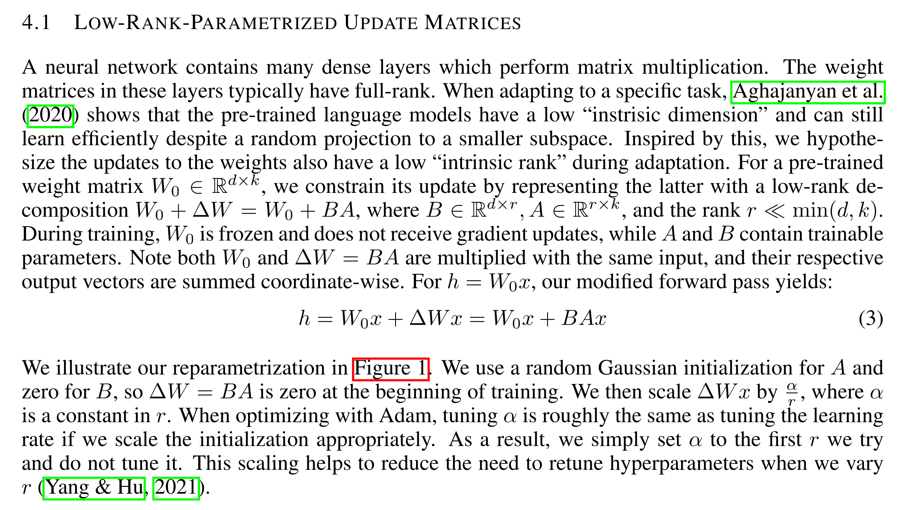

LLM基础知识整理
LLM基础知识整理
LLM-Base
BERT
BERT（Bidirectional Encoder Representations from Transformers）是一种基于Transformer架构的预训练语言模型，通过双向上下文建模显著提升了自然语言处理任务的性能。其核心原理如下：
1. 核心架构：Transformer编码器
- BERT采用多层Transformer编码器堆叠而成，基础模型包含12层，大模型包含24层。
- 每层编码器由多头自注意力机制和前馈神经网络组成，支持并行计算和长距离依赖捕捉。
- 自注意力机制允许模型动态权衡不同位置词的重要性，生成上下文相关的词表示。
2. 预训练任务
BERT通过两个无监督任务学习通用语言表示：
2.1 掩码语言模型（Masked Language Model, MLM）
- 方法：随机遮盖输入中15%的词（如替换为
[MASK]），模型基于上下文预测被遮盖的词。 - 遮盖策略：
- 80%替换为
[MASK]。 - 10%替换为随机词。
- 10%保留原词。
- 80%替换为
- 目的：迫使模型融合双向上下文信息，避免对遮盖标记过度依赖。
2.2 下一句预测（Next Sentence Prediction, NSP）
- 方法：输入两个句子（A和B），50%情况下B是A的真实下一句，50%为随机句子，模型判断二者是否连续。
- 目的：学习句子间关系，提升对段落级任务（如问答、推理）的理解。
3. 输入表示
BERT的输入为词、位置、段落嵌入的加和：
- 词嵌入（Token Embeddings）：将词映射为向量，包含
[CLS]（分类标记）和[SEP]（分隔标记）。 - 位置嵌入（Position Embeddings）：可学习的向量，表示词的位置。
- 段落嵌入（Segment Embeddings）：区分句子A和B（如NSP任务）。
5. 关键优势与局限
- 优势：
- 双向上下文建模：突破传统单向模型的限制。
- 通用性强：通过预训练+微调范式适配多种任务。
- 局限：
- 模型参数量大，训练资源消耗高。
三种嵌入
BERT的输入表示通过将词嵌入（Token Embeddings）、位置嵌入（Position Embeddings）和段落嵌入（Segment Embeddings）三者结合，形成最终的输入向量。以下是具体展开：
1. 词嵌入（Token Embeddings）
作用
- 将离散的词语（或子词）映射为连续向量，捕捉语义信息。
- 处理特殊标记（如
[CLS]、[SEP]、[MASK]）。
实现细节
- 分词方式：
- 使用WordPiece分词，将单词拆分为子词（subword），例如：
"unbelievable"→["un", "##belie", "##vable"]。
- 优点：减少词汇表大小（通常3万左右），解决OOV问题。
- 使用WordPiece分词，将单词拆分为子词（subword），例如：
- 特殊标记：
[CLS]：位于输入开头，用于分类任务的聚合表示。[SEP]：分隔两个句子（如问答对、句子对任务）。[MASK]：在预训练任务（MLM）中表示被遮盖的词。[PAD]：填充标记，统一输入长度。
- 词嵌入矩阵：
- 词表大小：约3万（不同版本略有差异）。
- 向量维度：通常与模型隐藏层维度一致（如BERT-base为768维）。
2. 位置嵌入（Position Embeddings）
作用
- 为模型提供词语的位置信息（Transformer本身不包含顺序信息）。
- 解决序列中词与词之间的相对或绝对位置关系。
实现细节
- 绝对位置编码：
- BERT采用可学习的位置向量（非固定的正弦/余弦函数）。
- 每个位置（0到最大序列长度-1）对应一个唯一的向量。
- 例如：BERT支持的最大序列长度为512，因此位置嵌入矩阵形状为
[512, 768]（BERT-base）。
- 与词嵌入的结合：
- 每个词的最终输入 = 词嵌入 + 位置嵌入 + 段落嵌入。
- 位置嵌入直接与词嵌入相加，而非拼接，减少计算量。
- 相对位置的局限性：
- BERT的位置嵌入是绝对位置编码，无法直接建模相对距离（后续模型如Transformer-XL改进这一点）。
3. 段落嵌入（Segment Embeddings）
作用
- 区分输入中的不同句子或段落（如句子对任务中的句子A和句子B）。
- 帮助模型理解句子间关系（如NSP任务）。
实现细节
- 段落标识：
- 输入中的每个词被标记为属于句子A（
Segment 0）或句子B（Segment 1）。 - 例如：
- 单句输入：所有词标记为
Segment 0。 - 句子对输入：
[CLS] A [SEP] B [SEP]→ A部分为Segment 0，B部分为Segment 1。
- 单句输入：所有词标记为
- 输入中的每个词被标记为属于句子A（
- 段嵌入向量：
- 每个段落标识（0或1）对应一个可学习的向量。
- 向量维度与词嵌入相同（如768维）。
- 应用场景：
- NSP任务：判断句子B是否是句子A的下一句。
- 问答任务：区分问题和上下文段落。
4. 输入整合流程
步骤示例（输入句子对：“How are you?” 和 “I’m fine.”）
分词与添加特殊标记：
1
[CLS] How are you? [SEP] I'm fine. [SEP]
映射为词嵌入：
- 每个词（包括
[CLS]和[SEP]）转换为768维向量。
- 每个词（包括
添加位置嵌入：
- 位置0对应
[CLS]，位置1对应"How"，依此类推，直到序列结束。
- 位置0对应
添加段落嵌入：
- 第一句（
[CLS] How are you? [SEP]）标记为Segment 0。 - 第二句（
I'm fine. [SEP]）标记为Segment 1。
- 第一句（
最终输入：
- 每个词的输入向量 = 词嵌入 + 位置嵌入 + 段落嵌入。
- 输入矩阵形状：
[序列长度, 隐藏层维度]（如[12, 768]）。
Transformer
阅读 v_JULY_v的博客，从第三部分开始看
为什么需要Transformer？
- 传统模型的局限性：RNN（循环神经网络）难以并行计算且难以捕捉长距离依赖，CNN（卷积神经网络）的局部感受野限制全局语义理解。
- 注意力机制的优势：可直接建模任意距离的词语关系，但早期注意力仍需依赖RNN/CNN框架。
- Transformer的突破：完全抛弃循环和卷积结构，仅用注意力机制构建模型，实现高效并行和全局建模。
核心结构：编码器-解码器架构
1. 编码器（Encoder）
- 输入处理：词向量 + 位置编码（解决无时序信息的缺陷）
- 核心模块：N个相同层堆叠（通常N=6），每层包含：
- 多头自注意力（Multi-Head Self-Attention）：并行计算多个注意力头，捕捉不同维度的语义关联
- 前馈神经网络（Feed Forward）：对每个位置独立进行非线性变换
- 残差连接 + Layer Normalization：缓解梯度消失，稳定训练
2. 解码器（Decoder）
- 额外功能：在自注意力层中引入掩码机制（防止未来信息泄露）
- 交叉注意力层：连接编码器输出与解码器输入，建立跨序列关联
关键技术细节
- 位置编码（Positional Encoding）
- 使用正弦函数或可学习向量，为无位置信息的模型注入序列顺序
- 多头注意力（Multi-Head Attention）
- 将Q/K/V投影到多个子空间，独立计算后拼接，增强模型表达能力
- 层归一化与残差连接
- 每个子层后接残差连接（输入+输出）和层归一化，加速收敛
优势与局限
- 优势：
- 并行计算效率远超RNN
- 长距离依赖建模能力极强
- 架构统一，适合多种任务
- 局限：
- 计算复杂度随序列长度平方增长（适合短文本，长文本需优化如稀疏注意力）
- 缺乏对局部结构的显式建模（后续工作通过卷积混合改进）
为什么与Encoder中的Q、K、V全部来自于上一层单元的输出不同，Decoder只有Q来自于上一个Decoder单元的输出，K与V都来自于Encoder最后一层的输出
在Transformer模型中，Decoder的Q、K、V来源与Encoder不同的设计，主要基于以下核心原因：
1. Encoder与Decoder的职责差异
Encoder的任务是全面理解输入序列，通过多层自注意力机制逐步融合全局信息，生成高层次的语义表示。因此，其每一层的Q、K、V均来自同一输入序列的上一层输出，确保每个位置都能动态关注整个输入序列的上下文。
Decoder的任务是自回归生成输出序列（如翻译、文本生成），需满足两个关键约束：
- 自回归性：生成当前词时，只能依赖已生成的词（防止信息泄露）。
- 输入依赖：生成的词需与输入序列的语义对齐（如翻译时需参考源语言）。
2. Decoder的结构与注意力机制
Decoder的每一层包含两种注意力机制：
(1) 掩码自注意力（Masked Self-Attention）
- Q、K、V均来自Decoder的上一层输出：
- 通过掩码机制（Masking），确保生成第(t)个词时，仅能关注前(t-1)个词，避免未来信息泄露。
- 作用：捕捉已生成输出序列的内部依赖关系（如语法连贯性）。
(2) 交叉注意力（Encoder-Decoder Attention）
- Q来自Decoder的上一层输出，K、V来自Encoder的最终输出：
- Q：代表当前生成位置（如目标语言的第(t)个词）的查询需求。
- K、V：携带输入序列的完整语义信息（如源语言句子的编码结果）。
- 作用：根据当前生成状态（Q），动态检索输入序列（K、V）中最相关的信息，指导下一个词的生成。

3. 为何交叉注意力中K、V必须来自Encoder？
(1) 输入与输出的语义对齐
- Encoder的最终输出是对输入序列的全局表示（如源语言句子的语义），Decoder需要通过交叉注意力将输出序列的生成与输入序列的关键信息对齐。
- 示例：在翻译“我爱AI”为“I love AI”时，生成“love”时需关注源句中的“爱”。
(2) 避免信息泄露与职责分离
- 如果K、V来自Decoder自身输出（即Decoder的上一层输出）：
- 信息泄露：即便使用了自回归掩码（mask），Decoder的隐藏状态可能包含未来时间步的信息，因为Decoder的生成是基于历史上下文累积的，而上层的隐藏状态可能隐含了未来生成的词的信息。这种信息泄露会破坏生成任务的因果性假设。
- 职责分离：Transformer模型中的Encoder和Decoder各司其职：
- Encoder：静态地编码输入序列，生成输入的全局语义表示（固定不变）。
- Decoder：动态生成输出序列，逐步生成每个词，同时通过交叉注意力从Encoder的输出中获取输入相关的信息。
(3) 计算效率与参数复用
- Encoder的最终输出只需计算一次，Decoder的每一层均可复用该结果作为K、V，避免重复编码输入序列，显著提升计算效率。
FFN
摘自 知乎
FFN本质上就是一个两层的MLP。这个MLP的数学本质是：
其中两层感知机中，第一层会将输入的向量升维，第二层将向量重新降维。这样子就可以学习到更加抽象的特征。
FFN 设计的初衷，其实就是为模型引入非线性变换。那接着问，attention 中也有 softmax，也是非线性，那 FFN 还是必须的么？ 大多数人开始产生自我怀疑，开始从别的角度回答 FFN 的作用。就比如用Transformers 原始论文中的解释： FNN 可以看作用 1x1 的卷积核来进行特征的升维和降维。
其实这么追问是个陷阱，用来了解一下候选人对 Transformers 细节的把握情况。这个陷阱其实会引出另外一个问题：attention 是线性运算的还是非线性运算的？
全局来看，对于x来说是非线性运算。因为仔细看一下 Attention 的计算公式，其中确实有一个针对 q 和 k 的 softmax 的非线性运算。
但是对于 value 来说，并没有任何的非线性变换。所以每一次 Attention 的计算相当于是对 value 代表的向量进行了加权平均，虽然权重是非线性的权重。这就是 FFN 必须要存在的原因，或者说更本质的原因是因为 FFN 提供了最简单的非线性变换。
线性变换无法处理一些非线性的特征，恰如当年马文明斯基给神经网络判的死刑，只需要加个非线性变换的激活函数就能起死回生。
Attention, FFN, ResNet 缺一不可但却可能是各司其职，我个人的观点（并不一定准确）是， Attention 的功能是做信息的提取和聚合，Resnet 提供信息带宽，而真正学到的知识或者信息都存储在 FFN 中。在图像领域中，也有一种说法，那就是 Attention 其实是 token mixer, FNN 其实是 channel mixer.
《 Attention is Not All You Need: Pure Attention Loses Rank Doubly Exponentially with Depth》这篇论文，提出了 Transformers 架构存在 token uniformity 的归纳偏置(inductive bias，有时候也叫归纳偏好)问题。如果去掉 FFN 或者 Resnet，则问题更加严重。
这里解释一下这两个名词，所谓归纳偏置，可以通俗的理解为模型的“个性”，就是满足训练集合的解法有无数种，但是不同的模型架构会让模型更偏向于某些解法。比如我们常用的一些正则化方法，其实就是让模型的归纳偏置倾向于选择一些简单的解法。任何模型都有归纳偏置，尤其是碰到未见过的样本的时候，模型的归纳偏置就更容易体现出来。 Transformers 的一个归纳偏执是什么呢？就是 token uniformity，有时候也叫 information diffusion，或者 anisotropic (各向异性)，也就是说 训练完后的 token 会共享很多相似信息。
看下图大概就知道了，我们期望表示 token 的向量，相似的要相近，不相似的要远，而且最好是均匀的分布在整个空间中，比如下图所示。但是 Transformers 会存在 各向异性的问题，也就是所有的 token 都挤到一个很窄的锥形区域了。
回到论文，论文将 FFN 和 ResNet 去掉之后做了一些消融实验，证明了 FFN 和 ResNet 是 Transformers 中的必备组件，这两个可以大大的缓解 token uniformity 或者 各向异性的问题。
FFN的记忆功能
这一节讲的两篇论文都非常有意思，建议大家看一看原始论文。
《Transformer Feed-Forward Layers Are Key-Value Memories》这篇文章做了很多实验和统计，得出了以下结论：
- FFN 是一个 Key-Value 记忆网络，第一层线性变换是 Key Memory，第二层线性变换是 Value Memory。
- FFN 学到的记忆有一定的可解释性，比如低层的 Key 记住了一些通用 pattern (比如以某某结尾)，而高层的 Key 则记住了一些语义上的 Pattern （比如句子的分类）。
- Value Memory 根据 Key Memory 记住的 Pattern，来预测输出词的分布。
- skip connection 将每层 FFN 的结果进行细化。
2015年，《End-To-End Memory Networks 》这篇论文提出了 Key-Value Memory 的结构，对于一个输入 xxx, 其网络结构为
FFN 的公式为，
这里 fff 是 ReLU 激活函数，可以看出两个结构的唯一区别就是一个是才用 softmax 进行归一化，另一个则采用 ReLU 进行筛选。本质上都差不多。
通过一些实验也确实证明了上面结论，也就是 FFN 确实将一些 pattern 或者知识记忆和存储起来了。
这就很有意思，从这个角度来说，Attention 是对短期的信息进行提取，而 FFN 则对整个训练样本进行信息提取和记忆。这也就能解释为什么一个有限的窗口甚至对语料进行了暴力截断，模型也能记住语料库中的信息。
FFN 是一种混合专家模型
MoEfication: Transformer Feed-forward Layers are Mixtures of Experts
这是刘知远团队的论文，其实一直以来，神经网络就存在稀疏激活的现象，也就是在推理的时候，其实只有极小一部分参数参与了计算。这篇论文则通过 MoE 的思想来将 FFN 层拆分成了多个专家，并且新增了一个路由模块来确定推理的时候来挂哪个专家的门诊：）
这么做完之后，在提升推理速度的同时，效果依然能保持原来的95%以上。
残差链接/ResNet残差网络
一、残差连接是什么？
- 核心思想：允许输入信号直接“跳过”某些网络层，与这些层的输出相加，形成
输出 = 输入 + 层变换(输入)的结构。 - 数学表达：输出=x+F(x)。其中，x 是输入，F(x) 是某一层（或几层）的变换（如卷积、注意力等）。
二、为什么需要残差连接？
缓解梯度消失/爆炸：
- 深层网络中，反向传播时梯度需经过多层连乘，易衰减（消失）或膨胀（爆炸）。
- 残差连接提供“捷径”，梯度可直接通过加法从深层传回浅层，减少对连乘路径的依赖。
解决网络退化问题：
实验发现：单纯增加网络深度（如超过20层的CNN）会导致训练误差上升（非过拟合，而是模型难以优化）。
三、在Transformer中的应用
Transformer的每个子层（如自注意力层、前馈网络）均采用残差连接，具体流程如下：
- 输入处理：输入 x 进入子层（如多头注意力）。
- 残差叠加：子层输出 F(x) 与原始输入 x 相加 → x+F(x)。
- 层归一化：对叠加后的结果做归一化 → LayerNorm(x+F(x))。
四、残差连接 vs 普通连接
| 普通连接 | 残差连接 |
|---|---|
| 输出 = 层变换(输入) | 输出 = 输入 + 层变换(输入) |
| 梯度依赖链式求导 | 梯度可通过加法捷径回传 |
| 深层易出现梯度消失 | 缓解梯度消失，支持超深层网络 |
| 需谨慎设计初始化/归一化 | 训练更稳定，收敛更快 |
为什么Transformer的长距离依赖建模能力强
在自然语言处理（NLP）中，长距离依赖（Long-Range Dependencies）指的是在文本中相隔较远的两个或多个元素之间的依赖关系。这些依赖关系可以是语法上的，也可以是语义上的。例如，在句子中，一个从句的开始部分和结束部分可能相隔很远，但它们之间存在语法上的依赖关系；或者在长篇文章中，主题的引入和后面的详细阐述之间可能存在语义上的依赖。
在传统的循环神经网络（RNN）和长短期记忆网络（LSTM）中，捕捉长距离依赖是一个挑战，因为随着序列长度的增加，信息可能会逐渐丢失，导致模型难以捕捉到这些远距离的依赖关系。
Transformer模型通过自注意力机制（Self-Attention Mechanism）有效地解决了这个问题。自注意力机制允许模型在处理序列的每个元素时，考虑序列中所有其他元素的信息，无论它们相隔多远。这意味着每个元素的表示都可以直接包含整个序列的上下文信息，从而有效地捕捉长距离依赖。
自注意力机制的关键在于它计算每个元素对序列中所有其他元素的注意力分数，然后根据这些分数对其他元素的表示进行加权求和，生成每个元素的最终表示。这个过程不受序列长度的限制，因此可以有效地处理长文本中的长距离依赖问题
摘自： CSDN
- 传统模型的问题：
- RNN：依赖链式时序传递，长距离信息需经过多步传播，易受梯度消失/爆炸影响。
- CNN：局部感受野需多层堆叠才能扩大，且多次卷积可能稀释远端信息。
- Transformer的突破：
- 自注意力允许序列中的任意两个位置直接计算关联权重，无论距离多远（如第1个词和第1000个词一步交互）。
- 权重计算公式：
每个位置的词通过查询（Query）与所有位置的键（Key）直接匹配，无距离限制。
位置编码
阅读：https://www.zhihu.com/tardis/zm/art/675243992?source_id=1003
在Transformer模型中，位置编码用于为序列中的每个位置注入位置信息，弥补自注意力机制本身不具备的位置感知能力。位置编码主要分为绝对位置编码和相对位置编码两大类，它们在建模位置信息的方式和应用场景上有显著差异。
一、绝对位置编码（Absolute Position Encoding）
核心思想：为序列中的每个绝对位置（如第1个词、第2个词等）分配一个独立的编码向量，直接与词嵌入相加。
特点：
- 位置独立性：每个位置的编码是固定的，与序列长度无关。
- 显式表示：直接编码绝对位置信息，如位置0、位置1等。
典型结构
Sinusoidal位置编码（原始Transformer）
- 使用正弦和余弦函数的组合生成固定编码：
- 优点：可处理任意长度序列，无需训练。
- 缺点：固定编码可能无法适应不同任务的数据分布。
- 使用正弦和余弦函数的组合生成固定编码：
可学习的位置编码（如BERT）
- 随机初始化一个位置嵌入矩阵，通过训练学习位置向量。
- 优点：灵活适应任务需求。
- 缺点：需要足够数据训练，对长序列泛化能力有限。
二、相对位置编码（Relative Position Encoding）
核心思想：建模词与词之间的相对距离（如“两个词相隔k个位置”），而非绝对位置。
特点：
- 位置关系性：关注词对之间的相对偏移（如+1、-2等）。
- 动态适应：对长序列更友好，能捕捉局部依赖。
典型结构
经典相对位置编码（Transformer-XL）
- 在计算注意力分数时，引入相对位置偏置：
- 其中 是可学习的相对位置偏置，仅依赖相对距离 。
- 在计算注意力分数时，引入相对位置偏置：
RoPE（Rotary Position Embedding，旋转位置编码）
- 通过复数域的旋转操作，将绝对位置编码融入相对位置计算，兼容两种信息（如LLaMA、ChatGLM采用）。
ALiBi（Attention with Linear Biases）
- 在注意力分数中直接添加一个与相对距离成线性关系的偏置项：
- 优点：无需显式位置嵌入，适合超长序列（如Transformer-XL的改进版）。
- 在注意力分数中直接添加一个与相对距离成线性关系的偏置项：
三、绝对 vs. 相对位置编码的异同
| 特性 | 绝对位置编码 | 相对位置编码 |
|---|---|---|
| 建模对象 | 单个位置的绝对坐标 | 词对之间的相对距离 |
| 泛化能力 | 对训练数据中的位置分布敏感 | 更易泛化到未见过的序列长度 |
| 长序列处理 | 可能因位置嵌入矩阵过大而受限 | 天然支持长序列（如ALiBi、RoPE） |
| 实现复杂度 | 简单（直接相加或拼接） | 复杂（需修改注意力计算逻辑） |
| 典型应用 | 短文本（BERT、GPT） | 长文本（Transformer-XL、LLaMA） |
核心差异
- 绝对位置编码：直接告诉模型“当前词在第几个位置”。
- 相对位置编码：告诉模型“两个词之间相隔多远”，更关注局部关系。
相对位置编码与位置编码外推
https://blog.csdn.net/v_JULY_v/article/details/135072211
https://blog.csdn.net/v_JULY_v/article/details/134085503
https://kexue.fm/archives/9675
也可以参考阅读：
https://www.zhihu.com/tardis/zm/art/675243992?source_id=1003
https://zhuanlan.zhihu.com/p/670149880
https://zhuanlan.zhihu.com/p/632780188
注意力
https://zh.d2l.ai/chapter_attention-mechanisms/index.html
注意力与自注意力的区别
简单来说，自注意力是一种特殊的注意力机制。
传统的Attention机制在一般任务的Encoder-Decoder model中，输入Source和输出Target内容是不一样的，比如对于英-中机器翻译来说，Source是英文句子，Target是对应的翻译出的中文句子，Attention机制发生在Target的元素Query和Source中的所有元素之间。简单的讲就是Attention机制中的权重的计算需要Target来参与的，即在Encoder-Decoder model中Attention权值的计算不仅需要Encoder中的隐状态而且还需要Decoder 中的隐状态。
而Self Attention顾名思义，指的不是Target和Source之间的Attention机制，而是Source内部元素之间或者Target内部元素之间发生的Attention机制，也可以理解为Target=Source这种特殊情况下的注意力计算机制。例如在Transformer中在计算权重参数时将文字向量转成对应的KQV，只需要在Source处进行对应的矩阵操作，用不到Target中的信息。
作者：知乎用户7icl58
链接：https://www.zhihu.com/question/397509972/answer/1893323493
来源：知乎。著作权归作者所有。
从本质上理解，Attention是从大量信息中有筛选出少量重要信息，并聚焦到这些重要信息上，忽略大多不重要的信息。权重越大越聚焦于其对应的Value值上，即权重代表了信息的重要性，而Value是其对应的信息。
至于Attention机制的具体计算过程，如果对目前大多数方法进行抽象的话，可以将其归纳为两个过程：第一个过程是根据Query和Key计算权重系数，第二个过程根据权重系数对Value进行加权求和。而第一个过程又可以细分为两个阶段：第一个阶段根据Query和Key计算两者的相似性或者相关性；第二个阶段对第一阶段的原始分值进行归一化处理；
自注意力机制是注意力机制的变体，其减少了对外部信息的依赖，更擅长捕捉数据或特征的内部相关性。自注意力机制在文本中的应用，主要是通过计算单词间的互相影响，来解决长距离依赖问题。其思想和attention类似，但是self-attention是Transformer用来将其他相关单词的“理解”转换成我们正在处理的单词的一种思路。
自注意力机制的计算过程：
1.将输入单词转化成嵌入向量；
2.根据嵌入向量得到q，k，v三个向量；
3.为每个向量计算一个score：score =q . k ；
4.为了梯度的稳定，Transformer使用了score归一化，即除以 dk ；
5.对score施以softmax激活函数；
6.softmax点乘Value值v，得到加权的每个输入向量的评分v；
7.相加之后得到最终的输出结果z ：z= ∑ v。
来自：知乎
自注意力机制（Self-Attention）和注意力机制（Attention Mechanism）的核心区别在于输入来源和应用目标，具体差异可以从以下几个角度分析：
1. 输入来源不同
注意力机制（跨注意力）：
- 处理两个不同序列之间的关系。例如，在机器翻译中：
- 查询（Query）：来自解码器的当前状态（目标序列）。
- 键（Key）和值（Value）：来自编码器的输出（源序列）。
- 目标：动态对齐不同序列的信息（如源语言与目标语言）。
- 处理两个不同序列之间的关系。例如，在机器翻译中：
自注意力机制：
- 处理同一序列内部的关系。
- 查询、键、值均来自同一输入序列（例如源句子的各个词）。
- 目标：捕捉序列内部的上下文依赖（如词与词之间的关联）。
- 处理同一序列内部的关系。
2. 应用场景不同
注意力机制：
- 常用于编码器-解码器架构，解决长距离信息丢失问题。
- 例：Seq2Seq模型（如RNN+Attention）中，解码器生成目标词时关注编码器的相关部分。
自注意力机制：
- 用于单序列的上下文建模，替代RNN/CNN捕捉长距离依赖。
- 例：Transformer的编码器中，每个词通过自注意力与整个输入序列交互。
3. 计算方式与结构特点
注意力机制：
- 计算跨序列相关性，权重反映两个序列元素间的重要性。
- 通常没有多头设计，直接计算单组注意力权重。
自注意力机制：
- 计算序列内部的相关性，权重反映同一序列中元素的重要性。
- 常结合多头注意力（Multi-Head Attention），将输入投影到多个子空间，并行捕捉不同维度的关系。
- 在Transformer中，自注意力通过缩放点积（Scaled Dot-Product）高效计算。
4. 功能与优势对比
| 维度 | 注意力机制 | 自注意力机制 |
|---|---|---|
| 输入关系 | 跨序列（如源-目标） | 同序列内部 |
| 依赖捕捉 | 局部或全局跨序列对齐 | 全局序列内长距离依赖 |
| 并行性 | 依赖编码器/解码器的结构（如RNN） | 完全并行计算（无递归结构） |
| 典型应用 | Seq2Seq任务（如翻译、摘要） | Transformer、BERT、GPT等模型 |
总结
- 注意力机制是跨序列的信息筛选工具，解决两个序列间的动态对齐问题。
- 自注意力机制是序列内部的上下文建模工具，通过全局交互增强表征能力。两者共同成为Transformer等现代模型的核心组件。
通过向量计算自注意力
第一步：生成查询向量、键向量和值向量
- Query（Q）：发起查询，决定“关注什么”。
- Key（K）：提供索引，确定“哪里重要”。
- Value（V）：携带内容，提供“提取什么”。
通过向量方式计算自注意力的第一步，就是从每个编码器的输入向量(即每个单词的词向量)生成三个向量：查询向量query-vec、键向量key-vec、值向量value-vec
- 查询向量、键向量、值向量这三个向量的维度在论文中设置的是64，在维度上比词嵌入向量更低，因为词嵌入和编码器的输入/输出向量的维度是512，但也不是必须比编码器输入输出的维数小，这样做主要是为了让后续多头注意力的计算更稳定
- 在下文你会看到，transformer通过多头注意力机制multi headed attention，对每个512维的输入向量都设置了8个头，不同的头关注每个输入向量不同的部分，而每个头的维度则是：512/8 = 64，且再多说一句，也可以设置为2个头，不一定非得设置为8个头
至于这三个向量的生成方法是把输入的向量分别乘以三个不同的权重矩阵、、，得到Q、K、V，而这些权重矩阵是在模型训练阶段中训练出来的
- 对于权重矩阵//如何训练出来的，还是标准老套路：先随机初始化，然后在损失函数中表示出来，最后通过反向传播不断优化学习得出，最终目标是最小化模型的预测误差https://www.julyedu.com/questions/interview-detail?kp_id=26&cate=深度学习&quesId=2921 “参考文献17”)
- 当然，值得注意的是，这些权重矩阵是模型参数的一部分，除了自注意力层，模型参数还包括：_嵌入层(词嵌入矩阵、位置编码)、层归一化参数(比如缩放参数)、MLP全连接层权重(包含升维 降维 偏置因子)、输出层(线性变换的投影矩阵)_等一系列参数 。而整个模型的损失函数会基于最终的输出(比如预测的下一个词的概率分布)与真实标签之间的差异来计算损失，然后通过反向传播算法将梯度传递回各个参数
为形象起见，还是举例来说明，在我们有了权重矩阵后，对于单词、分别而言（假定X1是Thinking，X2是Machines)：

- 与权重矩阵相乘得到与这个单词相关的查询向量、与权重矩阵相乘得到与这个单词相关的键向量、与权重矩阵相乘得到与这个单词相关的值向量
- 对于单词而言，依上类推：分别与、、相乘得到该单词的查询向量、键向量、值向量
最终使得输入序列的每个单词各自创建一个查询向量、一个键向量和一个值向量
可能有的读者有疑问了，设置这三个向量的用意何在或有何深意，实际上
- 查询向量Query是当前单词的表示形式，用于对所有其他单词(key)进行评分，我们只需要关注当前正在处理的token的query
- 键向量Key可以看做是序列中所有单词的标签，是在我们找相关单词时候的对照物
- 值向量Value是单词的实际表示，一旦我们对每个单词的相关度打分之后，我们就要对value进行相加表示当前正在处理单词的value
第二步：计算得分
接下来，我们需要针对这个例子中的第一个单词“Thinking”（pos#1）计算attention分值，即计算每个词对“Thinking”的打分，这个分决定着编码“Thinking”时(某个固定位置时)，应该对其他位置上的单词各自给予多少关注度
这个得分通过“Thinking”所对应的查询向量query和所有词的键向量key，依次乘积得出来。所以如果我们是处理位置最靠前的词的attention分值的话
第一个分数是q1和k1的点积(根据点积结果可以判断q1和k1这个向量的相似性)
第二个分数是q1和k2的点积(根据点积结果可以判断q1和k2这个向量的相似性)
第三、四步：分数除以8然后softmax
第三步和第四步分别是：
- 将分数除以8（8是论文中使用的键向量的维数64的平方根，这会让梯度更稳定，也可以使用其它值）
- 然后通过softmax传递结果，softmax的作用是使所有单词的分数归一化，得到的分数都是正值且它们的和为1
这个softmax分数决定了在编码当下位置（“Thinking”）时，包括当下位置单词（“Thinking”）在内每个单词的所获得的关注度。显然，正在当下位置上的Thinking获得最高的softmax分数(毕竟自己跟自己最相似嘛，所以编码thinking时对Thinking、Machines的注意力分数分配是：0.88 0.12)。
第五、六步：值向量乘以softmax分数后对加权值向量求和
第五步是将softmax分值乘以每个值向量，这样操作的意义在于留下我们想要关注的单词的value，并把其他不相关的单词丢掉(例如，让它们乘以0.001这样的小数)
第六步是对加权值向量求和，产生“Thinking”的self-attention的输出结果
接下来，针对每个单词都进行上述六个步骤的自注意力得分计算，相当于
先是“Thinking”对应的query(q1)与各个不同的key(k1、k2)计算相似度，然后除以8继而softmax，最后softmax值乘以值向量v1、v2并加权求和
即：，注：下图里的b1相当于z1再是“Machines”对应的query(q2)与各个不同的key(k1、k2)计算相似度，然后也除以8继而softmax，最后softmax值乘以值向量v1、v2并加权求和
即：，注：下图里的b2相当于z2
为更加一目了然，且如果不考虑缩放、softmax等因素，那么这一系列的计算过程可以简化为(注意，如果是GPT那种单向的结构，则只有其中带下划线的计算部分)
- q1k1 v1、q1k2 v2、q1k3 v3、q1k4 v4
- q2k1 v1、q2k2 v2、q2k3 v3、q2k4 v4
- q3k1 v1、q3k2 v2、q3k3 v3、q3k4 v4
- q4k1 v1、q4k2 v2、q4k3 v3、q4k4 v4
最终每个词的输出向量都包含了其他词的信息，每个词都不再是孤立的了，而且词与词的相关程度可以通过softmax输出的权重进行分析
如此，所有单词的自注意力计算就完成了，得到的向量就可以传给前馈神经网络。然而实际中，这些计算是以矩阵形式完成的，以便算得更快。这部分可以阅读原博客对应部分
为什么用KV Cache
KV Cache（键值缓存）是一种在自回归模型（如Transformer）生成序列时广泛使用的优化技术，主要用于大幅提升推理效率，尤其是在生成长文本时。以下是其核心原因和优势：
1. 避免重复计算，降低计算复杂度
问题背景：在自回归生成中（如GPT生成文本），每个新token的生成都依赖于之前所有token的注意力计算结果。若不缓存，每次生成时需重新计算所有历史token的键（Key）和值（Value），时间复杂度为O(n²)。
KV Cache的作用：缓存历史token的Key和Value向量，每次生成新token时只需计算当前token的K和V，并与缓存拼接。整体时间复杂度降至O(n)。
公式对比：
- 无缓存：第
t步计算量为t次（序列长度从1到t）。 - 有缓存：第
t步仅计算当前token，总计算量为1+2+...+n ≈ n²/2→ 优化为n。
- 无缓存：第
2. 减少内存访问开销
- 硬件瓶颈：GPU/TPU的内存带宽有限，频繁读写大张量会拖慢速度。
- KV Cache优化：通过缓存历史K和V，避免重复从显存中加载参数和中间结果，减少内存访问次数，提升计算效率。
3. 支持更长的生成序列
- 长文本场景：在对话、故事生成等任务中，序列长度可能达到数千token。若每次重新计算所有历史token的K和V，显存和计算资源会快速耗尽。
- KV Cache的权衡：以空间换时间，显存中仅需存储历史K和V（通常占模型总参数的10%~30%），即可支持生成超长文本。
KV Cache的代价
- 显存占用增加：缓存历史K和V需要额外显存，尤其是大模型和长序列场景（例如，Llama-3 70B生成4096 token需约5GB显存）。
- 工程优化：需合理管理缓存（如滑动窗口、压缩），避免显存溢出。
超参数
在大语言模型中，温度系数（Temperature）、Top-K 和 Top-P 都是用于控制生成文本随机性和多样性的重要参数，但它们的实现方式和作用机制有所不同。以下是三者的具体区别和典型应用场景：
一、温度系数（Temperature）
作用机制
通过调整 softmax 前的 logits 值改变概率分布的平滑程度。
公式：
其中 是温度值， 是原始 logits。
效果
- 高温：
概率分布更平缓，低概率词被提升，生成结果更多样化、更具创造性，但可能不连贯。
例如：生成诗歌或创意故事时使用。 - 低温：
概率分布更尖锐，高概率词被强化，生成结果更保守、确定性更强。
例如：生成技术文档或需要高准确性的场景。
二、Top-K 采样
作用机制
- 从概率最高的前 个候选词中重新分配概率并采样。
- 固定选择数量，无论概率高低，只保留前 个词。
效果
- K 值大：候选词范围广，生成结果多样性高，但可能包含低质量词。
- K 值小：生成结果更安全，但可能重复或缺乏新意。
三、Top-P（Nucleus Sampling）
作用机制
- 从累积概率超过阈值 的最小候选词集合中采样。
- 动态选择词的数量，可能每次生成的候选词数量不同。
效果
- P 值大（如 0.95）：候选词多，结果多样化。
- P 值小（如 0.5）：候选词少，结果更确定。
幻觉
大模型的“幻觉”（Hallucination）指的是生成内容看似合理但缺乏事实依据、存在错误或虚构信息的问题。这是由于模型在训练过程中过度依赖统计规律，而非真正的逻辑推理或事实验证。以下是解决大模型幻觉问题的系统性方法，分为预防、生成时干预和后处理三个阶段：
一、预防阶段：优化模型训练与架构
提升数据质量与多样性
- 数据清洗：过滤训练数据中的噪声、错误或冲突信息，减少模型学习错误知识的概率。
- 引入高质量知识库：结合结构化知识（如维基百科、专业数据库）与非结构化文本，增强模型对事实的依赖。
- 领域平衡：避免特定领域数据过载导致模型偏向生成不相关的内容。
改进模型架构
- 知识蒸馏（Knowledge Distillation）：用大模型训练小模型，通过简化结构和减少过参数化降低幻觉风险。
- 混合专家模型（MoE）：通过分治策略，让不同专家模块处理不同任务，减少通用生成中的不确定性。
- 显式知识嵌入：在模型中集成可解释的知识图谱模块，强制生成结果与已知事实对齐。
训练目标优化
- 事实性损失函数：在训练中引入基于事实正确性的惩罚项（如对比学习），鼓励模型生成可信内容。
- 多任务学习：联合训练生成任务与事实验证任务（如问答、文本蕴含），增强模型自我验证能力。
二、生成时干预：控制输出可靠性
检索增强生成（RAG, Retrieval-Augmented Generation）
- 在生成过程中动态检索外部知识库（如搜索引擎、数据库），将检索结果作为生成依据，避免依赖内部记忆。
- 示例：ChatGPT 的 Bing 搜索插件通过实时检索补充事实信息。
提示工程（Prompt Engineering）
- 明确约束：在输入中限定生成范围（如“仅基于2023年后的信息回答”）。
- 链式推理（Chain-of-Thought）：要求模型分步解释逻辑，暴露潜在错误。
- 自我质疑提示：例如“请先验证以下陈述是否正确：……”。
解码策略优化
- 基于知识采样的解码：对候选输出的每个token进行事实概率评估（如引入知识库匹配度打分）。
- 不确定性校准：通过蒙特卡洛采样检测模型对生成内容的置信度，过滤低置信度结果。
三、后处理：验证与修正
事实性验证工具
- 使用独立的事实核查模型（如DeFacto、FEVER）或API（如Google Fact Check Tools）对生成内容进行二次验证。
- 针对特定领域训练验证模型（如医疗、法律），提升针对性。
人工反馈与强化学习（RLHF）
- 收集用户对幻觉的标注数据，通过强化学习调整模型生成偏好。
- 构建闭环系统：用户标记错误→模型微调→迭代优化。
可解释性分析
- 可视化模型注意力权重，定位生成错误的知识来源。
- 使用对抗样本测试模型的鲁棒性，发现潜在幻觉模式。
四、长期解决方案
- 动态知识更新
- 构建实时更新的知识库（如增量学习或外部知识接口），避免模型知识过时。
- 因果推理能力增强
- 通过引入符号逻辑模块或因果图模型，提升模型对因果关系的理解。
- 多模态输入验证
- 结合文本、图像、视频等多模态信息交叉验证生成内容的真实性。
微调
可以直接阅读：https://blog.csdn.net/v_JULY_v/article/details/132116949
LoRA
摘自：https://blog.csdn.net/v_JULY_v/article/details/132116949
简言之，LoRA的核心思想是用一种低秩的方式来调整这些参数矩阵。在数学上，低秩意味着一个矩阵可以用两个较小的矩阵相乘来近似，可知
进行LoRA训练的一般步骤
那如何进行LoRA训练呢
选择目标层：首先，在预训练神经网络模型中选择要应用LoRA的目标层。这些层通常是与特定任务相关的，如自注意力机制中的查询Q和键K矩阵
值得注意的是，原则上，我们可以将LoRA应用于神经网络中权矩阵的任何子集，以减少可训练参数的数量在Transformer体系结构中，自关注模块(Wq、Wk、Wv、Wo)中有四个权重矩阵，MLP模块中有两个权重矩阵
- 我们将Wq(或Wk，Wv)作为维度的单个矩阵，尽管输出维度通常被切分为注意力头
- 不过，为了简单和参数效率，我们将研究限制为仅适应下游任务的注意力权重，并冻结MLP模块(因此它们不接受下游任务的训练)
初始化映射矩阵和逆映射矩阵：为目标层创建两个较小的矩阵 和，然后进行变换
是映射矩阵(一般用随机高斯分布初始化，当然实际代码实现时，比如微软的deepspeed chat在用到LoRA时，一开始通过0矩阵占位，然后调用搭配ReLU激活函数的kaiming均匀分布初始化，虽与LoRA原始定义所用的高斯分布初始化不同，但此两种初始化方式都可以工作)，维度上是降维
是逆映射矩阵(用0矩阵初始化)，维度上是升维
之后做参数变换：将目标层的原始参数矩阵W通过映射矩阵A和逆映射矩阵B进行变换，计算公式为：，这里W’是变换后的参数矩阵
其中，矩阵的大小由LoRA的秩(rank)和alpha值确定，即实际实现时，会对的结果通过进行缩放
微调模型：使用新的参数矩阵替换目标层的原始参数矩阵，然后在特定任务的训练数据上对模型进行微调
梯度更新：在微调过程中，计算损失函数关于映射矩阵A和逆映射矩阵B的梯度，并使用优化算法(如Adam、SGD等)对A和B进行更新。注意，在更新过程中，原始参数矩阵W保持不变，说白了，训练的时候固定原始PLM的参数，只训练降维矩阵A与升维矩阵B
重复更新：在训练的每个批次中，重复步骤3-5，直到达到预定的训练轮次(epoch)或满足收敛条件
且当需要切换到另一个下游任务时，可以通过减去B A然后添加不同的B’ A’来恢复W，这是一个内存开销很小的快速操作
总之，LoRA的详细步骤包括选择目标层、初始化映射矩阵和逆映射矩阵、进行参数变换和模型微调。在微调过程中，模型会通过更新映射矩阵U和逆映射矩阵V来学习特定任务的知识，从而提高模型在该任务上的性能
QLoRA
摘自：https://blog.csdn.net/v_JULY_v/article/details/132116949
QLoRA于今23年5月份通过此篇论文《QLORA: Efficient Finetuning of Quantized LLMs》被提出，本质是对LoRA的改进，相比LoRA进一步降低显存消耗，话怎讲？
- 因为LoRa为LLM的每一层添加了少量的可训练参数(适配器)，并冻结了所有原始参数。这样对于微调，只需要更新适配器权重，这可以显著减少内存占用
- 而QLoRa更进一步，引入了4位量化、双量化和利用nVidia统一内存进行分页(细节下文详解)
所有这些步骤都大大减少了微调所需的内存，同时性能几乎与标准微调相当
下图总结了不同的微调方法及其内存需求，其中的QLoRA通过将模型量化到4位精度并使用分页优化器管理内存峰值来改进LoRA
可能论文中的这个图还不够一目了然，那可以对比下图
Prompt Tuning
Prompt Tuning（提示调优）是近年来自然语言处理（NLP）领域兴起的一种高效迁移学习技术，旨在通过调整输入提示（Prompt）而非整个模型参数，使预训练语言模型（如BERT、GPT等）适配下游任务。其核心思想是利用预训练模型已有的知识，通过设计或优化提示词来“激发”模型完成任务，而非传统的全参数微调。
1. 核心原理
传统微调 vs. Prompt Tuning：
- 传统微调：针对下游任务调整整个模型的参数，需要大量标注数据和计算资源。
- Prompt Tuning：仅调整输入中的提示部分（如添加可学习的“软提示”向量），或优化少量参数，保留预训练模型的大部分参数不变。
Prompt的作用：
- 将下游任务重新建模为预训练任务的形式。例如：
- 情感分类任务 → 设计提示：“这句话的情感是[MASK]。”，模型预测[MASK]处的词（如“正面”/“负面”）。
- 文本生成任务 → 输入“请续写下文：{文本}[MASK]”。
- 将下游任务重新建模为预训练任务的形式。例如：
2. 主要方法
(1) 硬提示（Hard Prompts）
- 人工设计可读的文本模板，依赖领域知识。
- 示例：在问答任务中使用模板：“问题：{Q} 答案：[MASK]”。
- 缺点：设计耗时，且效果不稳定。
(2) 软提示（Soft Prompts）
- 可学习的连续向量：在输入层添加一组可训练的向量（如前缀或后缀），通过梯度下降优化。
- 代表方法：
- Prefix Tuning：在输入前添加可训练的前缀向量。
- P-Tuning：将离散提示替换为可优化的连续向量。
- Prompt Tuning（狭义）：仅优化提示向量，冻结模型参数。
(3) 混合方法
- 结合硬提示和软提示，例如P-Tuning v2，支持更深层次的提示优化。
3. 优势
- 参数高效：仅调整少量参数（如0.1%~1%的模型参数量），适合资源受限场景。
- 数据高效：在小样本（Few-shot）甚至零样本（Zero-shot）场景下表现优异。
- 多任务适配：不同任务可设计不同提示，共享同一预训练模型。
- 避免灾难性遗忘：冻结模型参数，保留预训练知识。
DPO、PPO
参考：https://blog.csdn.net/baoyan2015/article/details/135287298
简单阐述
PPO（Proximal Policy Optimization）
工作原理
- 目标函数：PPO旨在通过最大化特定的目标函数来改进策略。这个目标函数通常包括一个期望回报的项，以及可能的正则化项（如熵）来鼓励探索。
- 概率比率剪切：PPO使用了一种称为概率比率剪切的技术，这涉及到计算新策略和旧策略对动作概率的比率。如果这个比率偏离1太远，PPO会通过剪切这个比率来限制更新的幅度，从而避免过大的策略变动。
- 目标函数的优化：PPO对目标函数进行优化，通常使用随机梯度上升方法。这个过程涉及到在策略网络参数上应用梯度更新，以增加高回报动作的概率，同时减少低回报动作的概率。
- 多次迭代更新：PPO算法通常在一次策略更新中使用多个迭代，这意味着它会重复利用同一批数据多次，以进行有效的学习。
实现步骤
- 收集数据：首先，使用当前策略在环境中执行多个动作，收集状态、动作和回报的数据。
- 计算优势函数：然后，计算每个时间步的优势函数，这通常涉及到对回报的估计和基线（比如状态价值函数）的使用。
- 优化策略：接着，通过优化目标函数来更新策略参数。这个过程包括计算目标函数的梯度，并使用梯度上升来更新参数。
- 重复迭代：重复上述过程多次，直到策略收敛或达到预定的迭代次数。
加载4个模型，2个推理，2个训练

Actor Model：演员模型，想要训练的目标语言模型
Critic Model：评论家模型，它的作用是预估总收益
Reward Model：奖励模型，它的作用是计算即时收益
Reference Model：参考模型，它的作用是在RLHF阶段给语言模型增加一些“约束”，防止语言模型训歪（朝不受控制的方向更新，效果可能越来越差）
其中:
Actor/Critic Model在RLHF阶段是需要训练的；而Reward/Reference Model是参数冻结的。
Critic/Reward/Reference Model共同组成了一个“奖励-loss”计算体系，我们综合它们的结果计算loss，用于更新Actor和Critic Model
reward model和critic network的区别
reward model和critic network只是看上去有点像，但在RLHF流程中起到的作用是不一样：
reward model评估整个response质量，给出整体奖励信号，无法直接映射到每个token的贡献。
critic model估计价值函数，预测未来可能获得的累积奖励，为策略更新提供稳定的advantage信号
reward扮演的是环境的角色，而critic属于llm这个智能体的一部分，就好比在考试中，你自己检查卷子和老师给你打分的区别
DPO (Direct Preference Optimization)
PPO 优化需要同时加载 4 个 LLMs，并且还要同时训练其中的两个，优化难度和训练开销可想而知，DPO 则是对 PPO 做出改进，直接利用人类偏好数据去训练 LLM，免去了 RL 的过程，不需要额外训练 reward model 和 critic model，但又和 RLHF 使用相同的目标函数，理论上优化得到的模型也是一样的，同时还可以使得模型更容易训练；此外，DPO 只需要使用偏序关系表示的人类偏好数据，在标注数据时我们只需要比较两个回答哪个好而不用给出具体的打分，也节省了标注成本
DPO是一种相对较新的方法，它直接优化用户或专家的偏好，而非传统的累积奖励。在DPO中，通过对比不同的决策序列或策略，并根据用户或专家的偏好来优化模型，使得最终的策略能够更好地符合预期的行为。DPO通常用于那些难以明确定义奖励函数的场景，或者在用户偏好需要直接编码到决策过程中的应用中。
DPO的实现需要构建一个偏好模型，该模型能够从用户或专家的反馈中学习。在实际应用中，可能需要设计一种机制来收集用户的偏好数据，例如通过对比查询或者排名反馈。然后使用这些数据来训练一个或多个模型，这些模型能够预测给定决策序列的偏好得分，并据此来优化策略。
只需要加载2个模型，其中一个推理，另外一个训练，直接在偏好数据上进行训练。
原理公式解析可以查看：https://www.zhihu.com/tardis/zm/art/717010380?source_id=1003
RL中的改进过程
Actor-Critic 算法
之前讲解了基于值函数的方法（DQN）和基于策略的方法（REINFORCE），其中基于值函数的方法只学习一个价值函数，而基于策略的方法只学习一个策略函数。那么，一个很自然的问题是，有没有什么方法既学习价值函数，又学习策略函数呢？答案就是 Actor-Critic。Actor-Critic 是囊括一系列算法的整体架构，目前很多高效的前沿算法都属于 Actor-Critic 算法，本章接下来将会介绍一种最简单的 Actor-Critic 算法。需要明确的是，Actor-Critic 算法本质上是基于策略的算法，因为这一系列算法的目标都是优化一个带参数的策略，只是会额外学习价值函数，从而帮助策略函数更好地学习。
我们将 Actor-Critic 分为两个部分：Actor（策略网络）和 Critic（价值网络）。
- Actor 要做的是与环境交互，并在 Critic 价值函数的指导下用策略梯度学习一个更好的策略。
- Critic 要做的是通过 Actor 与环境交互收集的数据学习一个价值函数，这个价值函数会用于判断在当前状态什么动作是好的，什么动作不是好的，进而帮助 Actor 进行策略更新。
Actor 的更新采用策略梯度的原则，那 Critic 如何更新呢？我们可以采取时序差分残差的学习方式，对于单个数据定义价值函数的损失函数，与 DQN 中一样，我们采取类似于目标网络的方法，选择时序差分目标，产生梯度来更新价值函数，然后使用梯度下降方法来更新 Critic 价值网络参数即可。
TRPO
之前介绍的基于策略的方法包括策略梯度算法和 Actor-Critic 算法。这些方法虽然简单、直观，但在实际应用过程中会遇到训练不稳定的情况。回顾一下基于策略的方法：参数化智能体的策略，并设计衡量策略好坏的目标函数，通过梯度上升的方法来最大化这个目标函数，使得策略最优。但是这种算法有一个明显的缺点：当策略网络是深度模型时，沿着策略梯度更新参数，很有可能由于步长太长，策略突然显著变差，进而影响训练效果。
针对以上问题，我们考虑在更新时找到一块信任区域（trust region），在这个区域上更新策略时能够得到某种策略性能的安全性保证，这就是信任区域策略优化（trust region policy optimization，TRPO）算法的主要思想
PPO
第 11 章介绍的 TRPO 算法在很多场景上的应用都很成功，但是我们也发现它的计算过程非常复杂，每一步更新的运算量非常大。于是，TRPO 算法的改进版——PPO 算法在 2017 年被提出，PPO 基于 TRPO 的思想，但是其算法实现更加简单。
PPO-惩罚（PPO-Penalty）用拉格朗日乘数法直接将 KL 散度的限制放进了目标函数中，这就变成了一个无约束的优化问题，在迭代的过程中不断更新 KL 散度前的系数。
PPO 的另一种形式 PPO-截断（PPO-Clip）更加直接，它在目标函数中进行限制，以保证新的参数和旧的参数的差距不会太大
Agent
最直观的公式：Agent = LLM+Planning+Feedback+Tool use
可以参考：
https://www.cnblogs.com/huaweiyun/p/18289995
https://blog.csdn.net/v_JULY_v/article/details/135868163
RAG
优化
摘自知乎
- 文档种类繁多 在商业环境中，常见的文档格式包括doc、ppt、excel、pdf等，其中pdf还分为扫描版和文字版。处理doc类文档相对简单，因为它们主要包含文字信息，信息密度较高，尽管也存在图文混排的情况。Excel文档由于结构化数据的特性，处理起来也相对容易，尤其是经过程序填充合并单元格后，每行信息均保持完整。然而，ppt和pdf文档的处理则颇具挑战，它们常包含大量的图表、流程图和展示图片，导致抽取出的文字信息呈现出碎片化和不完整的特点。
- 切分方式的局限性 若未采用定制化的切分方式，文本往往按照固定长度进行分割，并设置一定的重叠。这种方法导致每段文本的语义信息实际上不够完整，同时忽略了文本中已有的标题等关键信息。这导致需要被向量化的文本段落主题语义不明确，与自然形成的段落存在显著差距，从而给检索过程带来巨大困难。
- 内部知识的特殊性 大模型或句向量在训练时通常使用通用语料，这导致它们在识别特定行业的内部知识时存在缺陷。这些模型难以理解企业内部的专业术语和缩写所代表的具体含义，极大地影响了生成向量的精准度和模型的输出效果。
- 用户提问的随意性 实际上，大部分用户在提问时，所写的query较为模糊和笼统，其实际意图并未完全体现在query中。这使得检索出的文本段落无法完全命中用户想要的内容，导致大模型根据这些文本段落无法输出合适的答案。例如，用户简单提问“请给我推荐一个酒店”，由于缺乏具体信息，模型难以提供满足用户需求的精准答案。
对于以上问题，一般可以采取多种方式进行解决，最终应用还是能够较好的满足用户的需求。
1. 对文档内容进行重新处理，以更准确地提取和表示信息。
针对各种类型的文档，分别进行了很多定制化的措施，用于完整的提取文档内容。这部分基本上脏活累活，
Doc类文档还是比较好处理的，直接解析其实就能得到文本到底是什么元素，比如标题、表格、段落等等。这部分直接将文本段及其对应的属性存储下来，用于后续切分的依据。
PDF类文档的难点在于，如何完整恢复图片、表格、标题、段落等内容，形成一个文字版的文档。
PPT的难点在于，如何对PPT中大量的流程图，架构图进行提取。因为这些图多以形状元素在PPT中呈现，如果光提取文字，大量潜藏的信息就完全丢失了。于是这里只能先将PPT转换成PDF形式，然后用上述处理PDF的方式来进行解析。
当然，这里还没有解决出图片信息如何还原的问题。大量的文档使用了图文混排的形式，例如上述的PPT文件，转换成PDF后，仅仅是能够识别出这一块是一幅图片，对于图片，直接转换成向量，不利于后续的检索。所以我们只能通过一个较为昂贵的方案，即部署了一个多模态模型，通过prompt来对文档中的图片进行关键信息提取，形成一段摘要描述，作为文档图片的索引。
2. 实施语义切分，以保持文本段落的完整性和语义连贯性。
对文档内容进行重新处理后，语义切分工作其实就比较好做了。我们现在能够拿到的有每一段文本，每一张图片，每一张表格，文本对应的属性，图片对应的描述。
对于每个文档，实际上元素的组织形式是树状形式。例如一个文档包含多个标题，每个标题又包括多个小标题，每个小标题包括一段文本等等。我们只需要根据元素之间的关系，通过遍历这颗文档树，就能取到各个较为完整的语义段落，以及其对应的标题。
有些完整语义段落可能较长，于是我们对每一个语义段落，再通过大模型进行摘要。这样文档就形成了一个结构化的表达形式：
| id | text | summary | source | type | image_source |
|---|---|---|---|---|---|
| 1 | 文本原始段落 | 文本摘要 | 来源文件 | 文本元素类别（主要用于区分图片和文本） | 图片存储位置（在回答中返回这个位置，前端进行渲染） |
3. 使用RAG Fusion技术来增加相关文本块的召回率。
RAG Fusion技术就是，当接收用户query时，让大模型生成5-10个相似的query，然后每个query去匹配5-10个文本块，接着对所有返回的文本块再做个倒序融合排序，如果有需求就再加个精排，最后取Top K个文本块拼接至prompt。

实际使用时候，这个方法的主要好处，是增加了相关文本块的召回率，同时对用户的query自动进行了文本纠错、分解长句等功能。但是还是无法从根本上解决理解用户意图的问题。
4. 引入追问机制，通过多轮对话来明确用户的问题。
这里是通过Prompt就可以实现的功能，只要在Prompt中加入“如果无法从背景知识回答用户的问题，则根据背景知识内容，对用户进行追问，问题限制在3个以内”。这个机制并没有什么技术含量，主要依靠大模型的能力。不过大大改善了用户体验，用户在多轮引导中逐步明确了自己的问题，从而能够得到合适的答案。
5. 微调Embedding句向量模型，以更好地适应垂直领域的知识。
这部分主要是为了解决垂直领域特殊词汇，在通用句向量中会权重过大的问题。比如有个通用句向量模型，它在训练中很少见到“SAAS”这个词，无论是文本段和用户query，只要提到了这个词，整个句向量都会被带偏。举个例子：
假如一个用户问的是：我是一个SAAS用户，我希望订购一个云存储服务。由于SAAS的权重很高，使得检索匹配时候，模型完全忽略了后面的那句话，才是真实的用户需求。返回的内容可能是SAAS的介绍、SAAS的使用手册等等。
这里的微调方法使用的数据，是让大模型对语义分割的每一段，形成问答对。用这些问答对构建了数据集进行句向量的训练，使得句向量能够尽量理解垂直领域的场景。
使用分层索引检索
由 LLM 生成摘要并对摘要进行检索可以使得检索过程更为高效。上节使用 LLM 提高信息密度的方法类似于无损压缩，而使用 LLM 生成摘要更像有损压缩。在大型数据库的情况下，一种有效的方法是创建两个索引 — 一个由摘要组成，另一个由文档块组成 ，并分两步进行搜索，首先通过摘要过滤掉相关文档，然后在此相关组内进行搜索。
RAG Fusion
参考：https://blog.csdn.net/weixin_42608414/article/details/138487248
https://blog.csdn.net/m0_56255097/article/details/141417641
Multi Query的基本思想是当用户输入查询语句(自然语言)时，我们让大模型(LLM)基于用户的问题再生成多个查询语句，这些生成的查询语句是对用户查询语句的补充，它们是从不同的视角来补充用户的查询语句，然后每条查询语句都会从向量数据库中检索到一批相关文档，最后所有的相关文档都会被喂给LLM，这样LLM就会生成比较完整和全面的答案。这样就可以避免因为查询语句的差异而导致结果不正确。如下图所示：
今天我们来介绍RAG 融合(rag fusion)，它的主要思想是在Multi Query的基础上，对其检索结果进行重新排序(即reranking)后输出Top K个最相关文档，最后将这top k个文档喂给LLM并生成最终的答案(answer)。如下图所示：
RRF 算法原理
RRF 是一种用于组合多个来源排名的聚合方法，特别是在 RAG 系统中应用时，不同的检索模型会生成不同的文档排名，RRF 将这些排名融合为一个统一的结果。
其中：
- 是文档
- 是检索器的集合
- 是常数
- 是文档 在ranker 中的等级
RRF的工作流程
用户查询：用户输入一个查询。
多重检索器：查询被发送到多个检索器，这些检索器可能使用不同的检索模型（如密集检索、稀疏检索、混合检索）。
独立排名：每个检索器对相关文档进行排名。
RRF 融合：使用 RRF 公式将所有检索器的排名结果合并。
生成最终排名：根据 RRF 分数生成一个统一的文档排名。
生成答案：生成模型使用排名最高的文档生成最终答案。
RRF背后的数学直觉
- 倒数排名：RRF 通过 1/(rank + k) 的公式，给排名靠前的文档更多的权重，这确保了在多个检索器中排名靠前的文档在最终排名中被优先考虑。
- 收益递减：随着排名的增加，分数的贡献呈非线性递减。这反映了排名 1 和 2 之间的相关性差异通常比排名 100 和 101 之间的差异更大。
- 排名聚合：通过对所有检索器的倒数秩求和，RRF 能够有效地结合多个来源的证据，使得最终排名更稳健，并且减少了单个检索器的偏见对结果的影响。
- 归一化：常数 k 作为平滑因子，防止任何单个检索器对结果的主导，并有助于更优雅地处理低排名项目中的平局。
k 值的选择
RRF 中常用的 k 值为 60，这一选择背后有几个原因：
- 实证表现：k = 60 在各种数据集和检索任务中表现良好。
- 平衡影响力：这个值在高排名和低排名项目的影响之间提供了良好的平衡。
- 有效的平局：k = 60 有助于在低排名项目中有效打破平局。
- 鲁棒性：该值在不同类型的检索系统和数据分布中表现出很强的鲁棒性。
尽管 k = 60 是常用的选择，但最佳值可能因具体应用和数据特性而异。某些系统可能需要调整这个参数以获得更好的表现。
向量存储与检索
langchain的memory
来自知乎
在LangChain中，Memory指的是大语言模型（LLM）的短期记忆。为什么是短期记忆？那是因为LLM训练好之后（获得了一些长期记忆），它的参数便不会因为用户的输入而发生改变。当用户与训练好的LLM进行对话时，LLM会暂时记住用户的输入和它已经生成的输出，以便预测之后的输出，而模型输出完毕后，它便会“遗忘”之前用户的输入和它的输出。因此，之前的这些信息只能称作为LLM的短期记忆。
为了延长LLM短期记忆的保留时间，则需要借助一些外部存储方式来进行记忆，以便在用户与LLM对话中，LLM能够尽可能的知道用户与它所进行的历史对话信息。
将历史的对话信息，作为短期记忆输入给LLM
在LangChain中提供了如下几种短期记忆管理的方式：BufferMemory、BufferWindowMemory、ConversionMemory、VectorStore-backed Memory等。
1.BufferMemory，它是直接将之前的对话，完全存储下来。这样在每一轮新的对话中，都会将原来的所有对话传递给LLM。
2.BufferWindowMemory，它是将最近的K组对话存储下来，这样在每一轮新的对话中将这K组对话传递给LLM。
3.VectorStore-backed Memory，它是将所有之前的对话通过向量的方式存储到VectorDB（向量数据库）中，在每一轮新的对话中，会根据用户的输入信息，匹配向量数据库中最相似的K组对话。

取出与当前问题相似的K轮对话作为短期记忆
4.ConversionMemory，它是将对话进行时对对话信息进行摘要，并将当前摘要存储在内存中。然后在新一轮对话中，可以将此摘要作为短期记忆传递给LLM。这种方式对于较长的对话非常有用，因为它是相当于压缩了历史的对话信息，能够将做够多的短期记忆发送给LLM。
将以前的对话先做总结，然后再传给LLM
向量数据库
Faiss
Meta的Faiss是一个用于高效相似性搜索和密集向量聚类的库。 它包含搜索任意大小的向量集的算法，直到可能不适合 RAM 的向量集。 它还包含用于评估和参数调整的支持代码。
以下摘自https://zhuanlan.zhihu.com/p/628148081
| 数据库名称 | 是否开源 | 社区影响力 | 编程语言 | 核心特性 | 适用场景 |
|---|---|---|---|---|---|
| Pinecone | 否 | 未知 | 向量存储与检索、全托管 | Saas类业务场景 | |
| weaviate | 是 | 5.3k star | Go | 同时支持向量与对象的存储、支持向量检索与结构化过滤、具备主流模式成熟的使用案例。高速、灵活，不仅仅具备向量检索，还会支持推荐、总结等能力 | |
| qdrant | 是 | 6.3k star | Rust | 向量存储与检索、云原生、分布式、支持过滤、丰富的数据类型、WAL日志写入 | |
| milvus | 是 | 17.7k star | Go | 极高的检索性能: 万亿矢量数据集的毫秒级搜索非结构化数据的极简管理丰富的API跨平台实时搜索和分析可靠：具有很高的容灾与故障转移能力高度可拓展与弹性支持混合检索统一的Lambda架构社区支持、行业认可 | |
| Chroma | 是 | 4.1k star | python | 轻量、内存级 |
langchain
可以参考：
https://aitutor.liduos.com/02-langchain/02-1.html
FlashAttention
摘自https://blog.csdn.net/v_JULY_v/article/details/133619540，原文更详细
Transformer计算复杂度*——*Self-Attention层与MLP层
简单理解的话，计算复杂度和序列长度的平方成正比，可以看一个小例子，比如两个相乘的矩阵大小分别为 和 ，矩阵乘法的一种计算方式是使用第一个矩阵的每一行与第二个矩阵的每一列做点乘
因为我们需要拿第一个矩阵的每一行去与第二个矩阵的每一列做点乘，所以总共就需要 次点乘。而每次点乘又需要 次乘法，所以总复杂度就为
空间复杂度等可以参考原文，这里就不再展开，但建议还是看一下
Flash Attention：通过kernel融合降低HBM读写次数，避免频繁地从HBM中读写数据
如上文说过的
- 在标准注意力实现中，注意力的性能主要受限于内存带宽，是内存受限的，频繁地从HBM中读写 的矩阵是影响性能的主要瓶颈
- 稀疏近似和低秩近似等近似注意力方法虽然减少了计算量FLOPs，但对于内存受限的操作，运行时间的瓶颈是从HBM中读写数据的耗时，减少计算量并不能有效地减少运行时间(wall-clock time)
- 针对内存受限的标准注意力，Flash Attention是IO感知的，目标是避免频繁地从HBM中读写数据
所以，减少对HBM的读写次数，有效利用更高速的SRAM来进行计算是非常重要的，而对于性能受限于内存带宽的操作，进行加速的常用方式就是kernel融合，该操作的典型方式分为三步：
- 每个kernel将输入数据从低速的HBM中加载到高速的SRAM中
- 在SRAM中，进行计算
- 计算完毕后，将计算结果从SRAM中写入到HBM中
如此，便可避免反复执行“从HBM中读取输入数据，SRAM执行计算，最后将计算结果写入到HBM中”，将多个操作融合成一个操作，减少读写HBM的次数
Flash Attention2：比Flash Attention快2倍
2023年7月，Tri Dao通过此篇论文《FlashAttention-2: Faster Attention with Better Parallelism and Work Partitioning》提出了Flash Attention2(这是该篇论文所对应的审稿意见)，其在第一个版本的基础上做了一系列改进
那第一个版本存在什么问题或不足呢？Flash Attention仍然不如其他基本操作(比如矩阵乘法)高效
- 虽然Flash Attention已经比标准的注意力实现快2-4倍，但前向传播仅达到设备理论最大FLOPs/s的30-50%，而反向传播更具挑战性，仅达到A100 GPU最大吞吐量的25-35%
- 相比之下，优化的矩阵乘法可以达到理论最大设备吞吐量的80-90%。 通过仔细的分析，观察到Flash Attention在GPU上不同线程块和线程束之间的工作划分仍然不够优化，导致低占用率或不必要的共享内存读写
因此，在Flash Attention的基础上，我们提出了Flash Attention2，具有更好的并行性和工作分区
调整算法以减少非矩阵乘法操作的浮点运算次数，同时保持输出不变(we tweak the algorithms to reduce the number of non-matmul FLOPs while not changing the output)
尽管非矩阵乘法操作仅占总浮点运算次数FLOPs的一小部分，但执行非矩阵乘法操作的时间较长(While the non-matmul FLOPs only account for a small fraction of the total FLOPs, they take longer to perform)
原因在于GPU具有专门用于矩阵乘法的计算单元(as GPUs have specialized units for matrix multiply)，例如Nvidia GPU上的张量核心，可让矩阵乘法的吞吐量相比非矩阵乘法高达16倍(as a result the matmul throughput can be up to 16× higher than non-matmul throughput)
以A100 GPU为例，其FP16/BF16矩阵乘法的最大理论吞吐量为312 TFLOPs/s，而非矩阵乘法的FP32吞吐量仅为19.5 TFLOPs/s。换言之，每个非矩阵乘法的FLOP比矩阵乘法的FLOP贵16倍
因此，减少非矩阵乘法操作的浮点运算次数并尽可能多地执行矩阵乘法操作非常重要
It is thus important to reduce non-matmul FLOPs and spend as much time as possible doing matmul FLOPs在序列长度维度上同时并行化前向传播和反向传播，除了批次和头数维度。 这样做可以提高GPU资源的利用率，特别是在序列较长(因此批次大小通常较小)的情况下。
即使在注意力计算的一个块内部，我们也将工作分配给不同的线程块以减少通信和共享内存的读写
最终，通过实验证明Flash Attention2相对于Flash Attention具有显著的加速效果，比如在不同设置的基准测试中(有无因果掩码，不同的头维度)，Flash Attention2在前向传递中实现了约2×的加速(FlashAttention-2比FlashAttention快2倍，意味着同样的费用之前只能训练8k上下文的模型，而现在可以训练具有16k更长上下文的模型)，达到了理论最大吞吐量的73%，且在反向传递中达到了理论最大吞吐量的63%。而当用于端到端训练GPT风格的模型时，每个A100 GPU的训练速度可达到225 TFLOPs/s
deepseek
MLA
https://blog.csdn.net/v_JULY_v/article/details/141535986
GRPO
https://blog.csdn.net/v_JULY_v/article/details/136656918
R1-Zero：RL算法GRPO、格式奖励、训练模板
蒸馏自：https://blog.csdn.net/v_JULY_v/article/details/145289228
DeepSeek-R1-Zero 通过纯RL训练，无冷启动、无SFT，这是很有魄力的举动，而其主要有三点独特的设计：RL算法GRPO、格式奖励、训练模板
RL算法GRPO：不需要critic
为了节省强化学习的训练成本，作者采用组相对策略优化GRPO，该方法放弃了通常与策略模型大小相同的critic模型「关于actor critic训练大模型策略那一套，详见上面提到过的此文《ChatGPT技术原理解析：从RL之PPO算法、RLHF到GPT4、instructGPT》，尽管很多文章都声称自己写的最棒，但都不如此文」，而是从组得分中估计baseline
具体来说，对于每个问题，GRPO 从旧策略 中抽取一组输出，然后通过最大化以下目标来优化策略模型 ：
且
其中， 和是超参数，而是优势，使用一组奖励计算，该奖励对应于每个组内的输出
可以参考：https://blog.csdn.net/v_JULY_v/article/details/136656918
“ DeepSeek提出了群体相对策略优化GRPO——Group Relative Policy Optimization
它避免了像 PPO 那样需要额外的价值函数近似——说白了 就是不要PPO当中的value model或value function去做价值评估
就是丢掉critic，也就没有了value(不需要基于value做估计)，也就不需要GAE
而是使用对同一问题的多个采样输出的平均奖励作为基线(说白了，直接暴力采样 N 次求均值)
毕竟优势函数不就重点考察那些超出预期、超出基线baseline的表现么，所以问题的关键就是基线baseline的定义，因为一旦定义好了baseline，目标就明确了——越发鼓励可以超过baseline的行为(而每个行为是由背后的策略所决定的，故优化行为的同时就是策略的不断迭代与优化)，而这就是优势函数所追求的
… ”

规则奖励建模(准确性奖励 + 格式奖励)：不用训练专门的偏好奖励模型
奖励是训练信号的来源，它决定了强化学习的优化方向
为了训练DeepSeek-R1-Zero，作者采用了一个基于规则的奖励系统(rule-based reward)，主要由两种类型的奖励组成：
准确性Accuracy奖励：准确性奖励模型评估响应是否正确。例如，对于具有确定性结果的数学问题，模型需要以指定格式（例如，框内）提供最终答案，从而实现基于规则的正确性验证——毕竟数学问题的答案具有明确的结果确定性与唯一性，对就是对，错就是错。同样，对于LeetCode问题，可以使用编译器根据预定义的测试用例生成反馈
如此，这些自动化生成的训练信号都能直接用于模型优化。这一过程自然需要在小批量样本中处理大量案例，并通过连续训练迭代，逐步优化
格式奖励：除了准确性奖励模型外，作者还采用了格式奖励模型，比如要求模型**在’
‘和’ '**标签之间放置CoT思考过程，那么，系统会检查模型输出是否正确地将推理过程包含在… 标签内，并将最终答案包裹在… 标签中，若格式正确，则模型可以获得奖励
而他们在开发DeepSeek-R1-Zero时并没有应用结果或过程神经奖励模型，因为他们发现神经奖励模型在大规模强化学习过程中可能会遭受奖励欺骗，而重新训练奖励模型需要额外的训练资源，并且会使整个训练流程变得复杂
训练模板：通过prompt让Zero启动深度思考的推理模式
为了训练 DeepSeek-R1-Zero，他们首先设计了一个简单的模板，以指导基础模型遵循作者指定的指令
如下表表 1 -DeepSeek-R1-Zero的模板所示
- prompt 在训练期间将被替换为特定的推理问题
- 该模板要求 DeepSeek-R1-Zero 先生成推理过程，然后再给出最终答案——相当于prompt，
推理轨迹COT ，answer/response
作者故意设置这种结构格式，避免对任何内容有特定的偏见，例如要求反思性推理或促进特定的问题解决策略，以确保在RL过程中，他们能够准确观察模型的自然进展
DeepSeek R1：纯RL训练的性能跃升
蒸馏自：https://blog.csdn.net/v_JULY_v/article/details/145289228
通过纯RL来提升大模型推理能力，他们期望在没有任何监督数据的情况下，强化大模型的推理能力，特别是关注纯RL过程的自我进化。具体而言，他们通过使用DeepSeek-V3-Base作为基础模型，并采用GRPO作为RL框架来提高模型在推理方面的性能。算是首次公开研究验证LLM的推理能力可以纯粹通过RL激励，而无需SFT
可能有的同学 还没体会到这个「舍弃SFT直接RL训练范式」的含金量，故咱们再对比下之前22年11月底发布的ChatGPT初版的训练模式，如下图所示
- 是不是先SFT、然后训练一个AI奖励模型、最后PPO迭代策略「如果不熟悉的，详看此文《ChatGPT技术原理解析：从RL之PPO算法、RLHF到GPT4、instructGPT》，你一定会有收获的」
- 而R1-Zero直接摒弃掉最开始的SFT，直接RL训练——规则奖励建模 然后没有critic的GRPO迭代

至于怎么通过RL训练DeepSeek-V3-Base，涉及到RL的常规训练方法「如果对RL不熟，参阅上文提到过的此文《强化学习极简入门》」，简言之，类似下图

- 上图中的Agent便是我们需要训练的V3，当人类提出一个问题/prompt时，这个问题/prompt就相当于V3所面临的Environment
- 接下来，V3便要针对上述问题/prompt做出反应，比如回答该问题/prompt，即输出token给到该问题/Environment——这个V3输出token的动作便是上图中的action，而预测下一个token的策略越好，越能通过实际的token输出，得到更符合问题/Environment的答案—— 故我们要做的就是不断优化V3的预测策略
- 最后，问题/Environment会根据V3的回答给出反馈，这个反馈便是上图中的reward ，而V3追求奖励最大化，从而在奖励最大化的目标下，V3不断优化它自身的预测策略 然后输出更好的token
最终，在经过数千个RL 步骤后，DeepSeek-R1-Zero 在推理基准测试中表现出超强性能。
R1的提出背景：解决Zero可读性差等问题
作者在受到DeepSeek-R1-Zero令人鼓舞的结果的启发后，自然的出现了两个问题：
- 通过结合少量高质量数据作为冷启动，是否可以进一步提高推理性能或加速收敛？
- 如何训练一个用户友好的模型，该模型不仅能产生清晰连贯的思维链CoT，还展示出强大的通用能力？
为了解决这些问题，作者设计了一个训练DeepSeek-R1的流程，该流程包括以下4个阶段：
- SFT (数千条cold start data)
- RL/GRPO
- SFT (结合rejection sampling，80w的推理和非推理数据)
- RL/GRPO
具体而言：
- 首先收集了数千个冷启动数据来微调 DeepSeek-V3-Base 模型
- 随后，进行类似 DeepSeek-R1-Zero 的面向推理的强化学习
- 当强化学习过程接近收敛时，通过对 RL 检查点进行拒绝采样，结合 DeepSeek-V3 在写作、事实问答和自我认知等领域的监督数据，创建新的 SFT 数据，然后重新训练DeepSeek-V3-Base 模型
- 在用新数据微调后，检查点会经历额外的 RL 过程——且会考虑到所有场景的提示
具体如下图所示(这是图源，来自Sebastian Raschka所绘)
阶段一 冷启动(主要关注推理)：通过R1-Zero生成数千条长CoT数据
与DeepSeek-R1-Zero不同，为了防止RL训练在初期出现不稳定的冷启动阶段，对于DeepSeek-R1，作者构建并收集了一小部分长CoT数据，以微调模型作为初始RL执行者
为了收集这些数据，他们探索了几种方法：
使用长CoT作为示例进行少样本提示
比如模型接收到的训练示例如下Problem: Train travels at 60 mph for 2 hours, how far?Solution: | special_token | Use the formula: Distance = Speed times Time. Speed is 60 mph, Time is 2 hours. Distance = 60 * 2 = 120 miles. | special_token | Summary: Train travels 120 miles. Problem: What is 7 + 3 * 7?Solution:然后针对“ 7 + 3*7 = ？ ”这个问题，模型便会按照对应的格式进行回答
| special_token | Following order of operations (PEMDAS/BODMAS), do multiplication before addition. So, first calculate 3 * 7 = 21. Then, add 7 to 21. 7 + 21 = 28. | special_token | Summary: The answer is 28.直接提示模型生成带有反思和验证的详细答案
相当于不仅要求模型解决问题，还要明确展示其推理过程，并对答案进行检查
比如针对上面的老问题：7 + 3*7 = ？Problem: Solve this, show reasoning step-by-step, and verify:What is 7 + 3*7？以可读格式收集DeepSeek-R1-Zero的输出——注意，此举相当于冷启动的数据来源于R1-Zero的生成
通过人工注释者的后处理来优化结果
比如R1-Zero 面对7 + 3*7 = ？，可能生成一个混乱的答案<think> ummm... multiply 3 and 7... get 21... then add 7...</think><answer> 28 </answer>这个时候，就需要做一定的人工修正，使得推理过程清晰、答案来的明确
| special_token | Reasoning: To solve this, we use order of operations,doing multiplication before addition.Step 1: Multiply 3 by 7, which is 21.Step 2: Add 7 to the result: 7 + 21 = 28.| special_token | Summary: The answer is 28.
总之，他们收集了R1-Zero生成的数千个冷启动数据来微调DeepSeek-V3-Base作为RL的起点。与DeepSeek-R1-Zero相比，冷启动数据的优势包括
可读性：DeepSeek-R1-Zero 的一个主要限制是其内容通常不适合阅读。其response可能会混合多种语言或缺乏markdown格式来为用户显示答案
相比之下，在为 DeepSeek-R1创建冷启动数据时，设计了一种可读的模式，包括在每个response的末尾添加摘要，并筛选掉可读性比较差的response
比如，他们将输出格式定义为|special_token|<reasoning_process>|special_token|<summary>其中reasoning_process是查询的 CoT，summary用于总结推理结果
潜力：通过精心设计带有人类先验知识的冷启动数据模式，可以观察到相较于DeepSeek-R1-Zero有更好的表现
故，作者认为迭代训练是推理模型的一种更好的方法
在获得高质量的冷启动数据后，便可以对 DeepSeek-V3-Base 进行监督微调SFT
阶段二 面向推理的GRPO RL：类似Zero的规则奖励，但增加语言一致性奖励
在对DeepSeek-V3-Base进行冷启动数据微调后，作者应用与DeepSeek-R1-Zero相同的大规模RL训练过程(背后的RL算法自然也是GRPO了)
具体而言
- 此阶段重点在于增强模型的推理能力，特别是在编码、数学、科学和逻辑推理等推理密集型任务中，这些任务涉及定义明确的问题和清晰的解决方案
但面对的问题是，在训练过程中，作者观察到当RL提示涉及多种语言时，CoT经常表现出语言混合现象 - 为了缓解语言混合问题
- 作者在RL训练中引入了一种语言一致性奖励，该奖励的计算方式为CoT中目标语言词汇的比例
尽管消融实验表明这种对齐会导致模型性能略有下降，但这种奖励符合人类偏好，使其更具可读性 - 最后，作者通过直接将推理任务的准确性和语言一致性奖励相加来形成最终奖励
- 作者在RL训练中引入了一种语言一致性奖励，该奖励的计算方式为CoT中目标语言词汇的比例
- 然后，作者在阶段一通过冷启动数据的微调模型上应用强化学习RL训练，直到其在推理任务上收敛
阶段三 V3上的的两轮SFT(结合rejection sampling)：涉及80w通用层面的推理和非推理数据
当阶段二 面向推理的强化学习RL收敛时，作者利用所得的checkpoint来收集用于下一轮(对应着阶段三)的SFT(监督微调)数据——你是不想问 合着阶段一 阶段二就是为了方便阶段三来收集推理层面的SFT数据？直白点说 不为模型 为推理数据
与最初冷启动数据主要关注推理不同，此阶段结合了来自其他领域的数据，以增强模型在写作、角色扮演和其他通用任务方面的能力
具体来说，作者生成数据并按如下所述微调模型
推理SFT数据：来自阶段二模型
作者通过执行拒绝采样「只有那些正确且推理清晰的输出才会被保留，质量较低的输出会被丢弃」，从上述阶段二 RL训练的checkpoint中整理推理提示并生成推理轨迹
We curate reasoning prompts and generate reasoning trajectories by perform-ing rejection sampling from the checkpoint from the above RL training在之前的DeepSeek-R1-Zero阶段，作者只包括可以使用**基于规则的奖励(准确性奖励 + 格式奖励)**进行评估的数据 。然而，在这一阶段，作者通过加入额外的数据来扩展数据集，其中一些使用生成奖励模型，通过将“真实值和模型预测”输入DeepSeek-V3进行判断，即_we expand the dataset by incorporating additional data, some of which use a generative reward model by feeding the ground-truth and model predictions into DeepSeek-V3 for judgment_
此外，由于模型输出有时混乱且难以阅读，作者已过滤掉混合语言、长段落和代码块的思维链。对于每个prompt，采样多个response并仅保留正确的响应
总共，作者收集了约60万条与推理相关的训练样本
非推理SFT数据：来自DeepSeek-V3
对于非推理数据，例如写作、事实问答、自我认知，和翻译，作者采用DeepSeek-V3管道并重用DeepSeek-V3的SFT数据集的部分内容
对于某些非推理任务，作者调用DeepSeek-V3在回答问题之前通过prompt生成潜在的思维链
然而，对于更简单的查询，例如“你好”，不会提供思维链作为响应——因为此时不存在推理的必要性
最终，作者总共收集了大约20万个与推理无关的训练样本
然后使用上述大约80万样本的精心整理数据集对DeepSeek-V3-Base进行两轮微调
- 两轮微调相当于两个epoch的sft(当然，具体 如何精心整理、如何具体编排的，在技术报告中暂未透露)
- 此外，不知读者_注意到了没有，本阶段三微调的仍然是V3-Base__，而非上面阶段一 SFT之后的模型或阶段二 RL训练的模型__，即We fine-tune DeepSeek-V3-Base for two epochs using the above curated dataset of about 800k samples_」
阶段四 所有场景的RL：提高有用性和无害性，且混合规则奖励和偏好奖励
为了进一步使模型符合人类偏好，作者实施了一个辅助的强化学习阶段，旨在提升模型的有用性和无害性，同时优化其推理能力
具体来说，作者使用奖励信号和多样的提示分布组合来训练模型
对于推理数据
- 作者遵循DeepSeek-R1-Zero中概述的方法，该方法利用基于规则的奖励(rule-based reward)来指导数学、代码和逻辑推理领域的学习过程
- For reasoning data, we adhere to themethodology outlined in DeepSeek-R1-Zero, which utilizes rule-based rewards to guide thelearning process in math, code, and logical reasoning domains
对于一般数据
- 作者使用奖励模型来捕捉复杂和微妙场景中的人类偏好——preference reward
- For general data, we resort to reward models to capture human preferences in complex and nuanced scenarios.
- 比如基于 DeepSeek-V3 管道进行构建，并采用类似的偏好对分布和训练提示
- We build upon the DeepSeek-V3 pipeline and adopt a similar distribution of preference pairs and training prompts
类似的，有个DPO的工作，详见此文《RLHF的替代之DPO原理解析：从RLHF、Claude的RAILF到DPO、Zephyr》
对于有用性
- 作者专注于最终总结，确保评估强调响应对用户的实用性和相关性，同时尽量减少对基础推理过程的干扰
对于无害性
- 作者评估模型的整个response，包括推理过程和总结，以识别和减轻生成过程中可能出现的任何潜在风险、偏见或有害内容
最终，奖励信号和多样数据分布的整合使作者能够训练出一个在推理上表现出色，同时优先考虑有用性和无害性的模型
最后，我再把上面4个阶段 用下述表格汇总一下
阶段一 冷启动SFT
阶段二 规则奖励下的RL
R1-Zero模型生成的冷启动数据(包含一定的人工修正)：微调V3
面向推理的RL：结合三个规则奖励——准确性奖励、格式奖励、语言一致性奖励
阶段三 增强SFT
阶段四 规则+偏好奖励下的RL
来自阶段二模型的60w推理数据
和V3模型的20w非推理数据：微调V3
全场景RL
规则奖励、偏好奖励
此外，在经过我上面4个阶段的解读之后，你再看本1.3节开头Sebastian Raschka画的那个图 是不是完全清晰、一目了然了？
DeepSeek-R1一些经验总结：他们不成功的尝试
出处同上
在开发DeepSeek-R1的早期阶段，作者表示也遇到了失败和挫折
他们在技术报告里分享了他们的失败经验以提供一些见解，但注意：这并不意味着这些方法无法开发出有效的推理模型
关于过程奖励模型PRM
PRM是一种合理的方法「关于什么是PRM，详见此文《一文通透OpenAI o1：从CoT、Quiet-STaR、Self-Correct、Self-play RL、MCTS等技术细节到工程复现》的1.3.1节Let’s Verify Step by Step(含ORM、PRM的介绍)」，引导模型朝向更好的方向发展解决推理任务的方法（Lightman等，2023；Uesato等，2022；Wang等，2023）
然而，在实践中，PRM有三个主要的限制可能会阻碍其最终成功
- 首先，在一般推理中明确定义一个细粒度步骤是具有挑战性的
- 其次，确定当前中间步骤是否正确是一项挑战。使用模型进行自动注释可能不会产生令人满意的结果，而手动注释不利于规模化
- 第三，一旦引入基于模型的PRM，就不可避免地导致奖励黑客行为（Gao等，2022），重新训练奖励模型需要额外的训练资源，并且复杂化了整个训练流程
总之，虽然PRM在重新排序模型生成的前N个响应或辅助引导搜索（Snell等，2024）方面表现出良好的能力，但与其在他们实验中引入的大规模强化学习过程中的额外计算开销相比，其优势是有限的
关于蒙特卡罗树搜索MCTS
受AlphaGo和AlphaZero的启发，作者探索了使用蒙特卡罗树搜索MCTS 来增强测试时计算的可扩展性。这种方法涉及将答案分解成更小的部分，以便模型能够系统地探索解决方案空间
- 为此，他们提示模型生成多个标签，这些标签对应于搜索所需的具体推理步骤，在训练中，首先使用收集的提示通过预训练的价值模型引导的MCTS来寻找答案
- 随后，使用生成的问题-答案对来训练actor模型和critic模型，迭代地完善这一过程
然而，当扩大训练规模时，这种方法会遇到几个挑战
首先，与棋类游戏不同，棋类游戏的搜索空间相对明确，而token生成则呈现出指数级增长的搜索空间
- 为了解决这个问题，他们为每个节点设置了最大扩展限制，但这可能导致模型陷入局部最优
其次，critic模型直接影响生成的质量，因为它指导搜索过程的每一步。而训练一个细粒度的价值模型本质上是困难的，这使得模型难以迭代改进
虽然AlphaGo的核心成功依赖于训练一个critic模型来逐步提升其性能，但由于token生成的复杂性，这一原则在他们的设置中很难复制
总之，虽然MCTS可以在与预训练的critic模型配对时提高推理性能，但通过自我搜索迭代提升模型性能仍然是一个重大挑战
最后，再说一下DeepSeek-R1的不足与未来计划
- 通用能力：目前，DeepSeek-R1在函数调用、多轮对话、复杂角色扮演和json输出等任务中的能力不如DeepSeek-V3
未来，他们计划探索如何利用长CoT来增强这些领域的任务- 语言混合：DeepSeek-R1目前针对中文和英文进行了优化，这可能会在处理其他语言的查询时导致语言混合问题。例如，即使查询是用非英语或中文的语言进行的，DeepSeek-R1可能仍会使用英语进行推理和响应
故他们计划在未来的更新中解决这一限制- 提示工程：在评估 DeepSeek-R1 时，作者观察到它对提示非常敏感。少样本提示会持续降低其性能。因此，作者建议用户直接描述问题，并使用零样本设置指定输出格式，以获得最佳结果
- 软件工程任务：由于长时间的评估影响了强化学习过程的效率，大规模的强化学习在软件工程任务中尚未被广泛应用
因此，在软件工程基准测试中，DeepSeek-R1未能显示出比DeepSeek-V3更大的改进
未来的版本将通过在软件工程数据上实施拒绝采样或在强化学习过程中引入异步评估来提高效率
MoE
推荐阅读：
https://huggingface.co/blog/zh/moe
https://zhuanlan.zhihu.com/p/672712751
https://zhuanlan.zhihu.com/p/673048264
以下是对https://huggingface.co/blog/zh/moe 的摘抄：
模型规模是提升模型性能的关键因素之一。在有限的计算资源预算下，用更少的训练步数训练一个更大的模型，往往比用更多的步数训练一个较小的模型效果更佳。
混合专家模型 (MoE) 的一个显著优势是它们能够在远少于稠密模型所需的计算资源下进行有效的预训练。这意味着在相同的计算预算条件下，您可以显著扩大模型或数据集的规模。特别是在预训练阶段，与稠密模型相比，混合专家模型通常能够更快地达到相同的质量水平。
那么，究竟什么是一个混合专家模型 (MoE) 呢？作为一种基于 Transformer 架构的模型，混合专家模型主要由两个关键部分组成:
- 稀疏 MoE 层: 这些层代替了传统 Transformer 模型中的前馈网络 (FFN) 层。MoE 层包含若干“专家”(例如 8 个)，每个专家本身是一个独立的神经网络。在实际应用中，这些专家通常是前馈网络 (FFN)，但它们也可以是更复杂的网络结构，甚至可以是 MoE 层本身，从而形成层级式的 MoE 结构。
- 门控网络或路由: 这个部分用于决定哪些令牌 (token) 被发送到哪个专家。例如，在下图中，“More”这个令牌可能被发送到第二个专家，而“Parameters”这个令牌被发送到第一个专家。有时，一个令牌甚至可以被发送到多个专家。令牌的路由方式是 MoE 使用中的一个关键点，因为路由器由学习的参数组成，并且与网络的其他部分一同进行预训练。

总结来说，在混合专家模型 (MoE) 中，我们将传统 Transformer 模型中的每个前馈网络 (FFN) 层替换为 MoE 层，其中 MoE 层由两个核心部分组成: 一个门控网络和若干数量的专家。
尽管混合专家模型 (MoE) 提供了若干显著优势，例如更高效的预训练和与稠密模型相比更快的推理速度，但它们也伴随着一些挑战:
- 训练挑战: 虽然 MoE 能够实现更高效的计算预训练，但它们在微调阶段往往面临泛化能力不足的问题，长期以来易于引发过拟合现象。
- 推理挑战: MoE 模型虽然可能拥有大量参数，但在推理过程中只使用其中的一部分，这使得它们的推理速度快于具有相同数量参数的稠密模型。然而，这种模型需要将所有参数加载到内存中，因此对内存的需求非常高。以 Mixtral 8x7B 这样的 MoE 为例，需要足够的 VRAM 来容纳一个 47B 参数的稠密模型。之所以是 47B 而不是 8 x 7B = 56B，是因为在 MoE 模型中，只有 FFN 层被视为独立的专家，而模型的其他参数是共享的。此外，假设每个令牌只使用两个专家，那么推理速度 (以 FLOPs 计算) 类似于使用 12B 模型 (而不是 14B 模型)，因为虽然它进行了 2x7B 的矩阵乘法计算，但某些层是共享的。
什么是稀疏性?
稀疏性的概念采用了条件计算的思想。在传统的稠密模型中，所有的参数都会对所有输入数据进行处理。相比之下，稀疏性允许我们仅针对整个系统的某些特定部分执行计算。这意味着并非所有参数都会在处理每个输入时被激活或使用，而是根据输入的特定特征或需求，只有部分参数集合被调用和运行。
让我们深入分析 Shazeer 对混合专家模型 (MoE) 在翻译应用中的贡献。条件计算的概念 (即仅在每个样本的基础上激活网络的不同部分) 使得在不增加额外计算负担的情况下扩展模型规模成为可能。这一策略在每个 MoE 层中实现了数以千计甚至更多的专家的有效利用。
这种稀疏性设置确实带来了一些挑战。例如，在混合专家模型 (MoE) 中，尽管较大的批量大小通常有利于提高性能，但当数据通过激活的专家时，实际的批量大小可能会减少。比如，假设我们的输入批量包含 10 个令牌， 可能会有五个令牌被路由到同一个专家，而剩下的五个令牌分别被路由到不同的专家。这导致了批量大小的不均匀分配和资源利用效率不高的问题。在接下来的部分中，将会讨论 让 MoE 高效运行 的其他挑战以及相应的解决方案。
那我们应该如何解决这个问题呢？一个可学习的门控网络 (G) 决定将输入的哪一部分发送给哪些专家 (E):
在这种设置下，虽然所有专家都会对所有输入进行运算，但通过门控网络的输出进行加权乘法操作。但是，如果 G (门控网络的输出) 为 0 会发生什么呢？如果是这种情况，就没有必要计算相应的专家操作，因此我们可以节省计算资源。那么一个典型的门控函数是什么呢？一个典型的门控函数通常是一个带有 softmax 函数的简单的网络。这个网络将学习将输入发送给哪个专家。
Shazeer 等人的工作还探索了其他的门控机制，其中包括带噪声的 TopK 门控 (Noisy Top-K Gating)。这种门控方法引入了一些可调整的噪声，然后保留前 k 个值。具体来说:
- 添加一些噪声
- 选择保留前 K 个值
- 应用 Softmax 函数
这种稀疏性引入了一些有趣的特性。通过使用较低的 k 值 (例如 1 或 2)，我们可以比激活多个专家时更快地进行训练和推理。为什么不仅选择最顶尖的专家呢？最初的假设是，需要将输入路由到不止一个专家，以便门控学会如何进行有效的路由选择，因此至少需要选择两个专家。Switch Transformers 就这点进行了更多的研究。
我们为什么要添加噪声呢？这是为了专家间的负载均衡！
混合专家模型中令牌的负载均衡
正如之前讨论的，如果所有的令牌都被发送到只有少数几个受欢迎的专家，那么训练效率将会降低。在通常的混合专家模型 (MoE) 训练中，门控网络往往倾向于主要激活相同的几个专家。这种情况可能会自我加强，因为受欢迎的专家训练得更快，因此它们更容易被选择。为了缓解这个问题，引入了一个 辅助损失，旨在鼓励给予所有专家相同的重要性。这个损失确保所有专家接收到大致相等数量的训练样本，从而平衡了专家之间的选择。接下来的部分还将探讨专家容量的概念，它引入了一个关于专家可以处理多少令牌的阈值。在 transformers 库中，可以通过 aux_loss 参数来控制辅助损失。
MoEs and Transformers
Transformer 类模型明确表明，增加参数数量可以提高性能，因此谷歌使用 GShard 尝试将 Transformer 模型的参数量扩展到超过 6000 亿并不令人惊讶。
GShard 将在编码器和解码器中的每个前馈网络 (FFN) 层中的替换为使用 Top-2 门控的混合专家模型 (MoE) 层。下图展示了编码器部分的结构。这种架构对于大规模计算非常有效: 当扩展到多个设备时，MoE 层在不同设备间共享，而其他所有层则在每个设备上复制。我们将在 “让 MoE 起飞” 部分对这一点进行更详细的讨论。

为了保持负载平衡和训练效率，GShard 的作者除了引入了上一节中讨论的类似辅助损失外，还引入了一些关键变化:
- 随机路由: 在 Top-2 设置中，我们始终选择排名最高的专家，但第二个专家是根据其权重比例随机选择的。
- 专家容量: 我们可以设定一个阈值，定义一个专家能处理多少令牌。如果两个专家的容量都达到上限，令牌就会溢出，并通过残差连接传递到下一层，或在某些情况下被完全丢弃。专家容量是 MoE 中最重要的概念之一。为什么需要专家容量呢？因为所有张量的形状在编译时是静态确定的，我们无法提前知道多少令牌会分配给每个专家，因此需要一个固定的容量因子。
GShard 的工作对适用于 MoE 的并行计算模式也做出了重要贡献，但这些内容的讨论超出了这篇博客的范围。
注意: 在推理过程中，只有部分专家被激活。同时，有些计算过程是共享的，例如自注意力 (self-attention) 机制，它适用于所有令牌。这就解释了为什么我们可以使用相当于 12B 稠密模型的计算资源来运行一个包含 8 个专家的 47B 模型。如果我们采用 Top-2 门控，模型会使用高达 14B 的参数。但是，由于自注意力操作 (专家间共享) 的存在，实际上模型运行时使用的参数数量是 12B。
Switch Transformers
尽管混合专家模型 (MoE) 显示出了很大的潜力，但它们在训练和微调过程中存在稳定性问题。Switch Transformers 是一项非常激动人心的工作，它深入研究了这些话题。作者甚至在 Hugging Face 上发布了一个 1.6 万亿参数的 MoE，拥有 2048 个专家，你可以使用 transformers 库来运行它。Switch Transformers 实现了与 T5-XXL 相比 4 倍的预训练速度提升。

就像在 GShard 中一样，作者用混合专家模型 (MoE) 层替换了前馈网络 (FFN) 层。Switch Transformers 提出了一个 Switch Transformer 层，它接收两个输入 (两个不同的令牌) 并拥有四个专家。
与最初使用至少两个专家的想法相反，Switch Transformers 采用了简化的单专家策略。这种方法的效果包括:
- 减少门控网络 (路由) 计算负担
- 每个专家的批量大小至少可以减半
- 降低通信成本
- 保持模型质量
Switch Transformers 也对 专家容量 这个概念进行了研究。
上述建议的容量是将批次中的令牌数量均匀分配到各个专家。如果我们使用大于 1 的容量因子，我们为令牌分配不完全平衡时提供了一个缓冲。增加容量因子会导致更高的设备间通信成本，因此这是一个需要考虑的权衡。特别值得注意的是，Switch Transformers 在低容量因子 (例如 1 至 1.25) 下表现出色。
Switch Transformer 的作者还重新审视并简化了前面章节中提到的负载均衡损失。在训练期间，对于每个 Switch 层的辅助损失被添加到总模型损失中。这种损失鼓励均匀路由，并可以使用超参数进行加权。
作者还尝试了混合精度的方法，例如用 bfloat16 精度训练专家，同时对其余计算使用全精度进行。较低的精度可以减少处理器间的通信成本、计算成本以及存储张量的内存。然而，在最初的实验中，当专家和门控网络都使用 bfloat16 精度训练时，出现了不稳定的训练现象。这种不稳定性特别是由路由计算引起的，因为路由涉及指数函数等操作，这些操作对精度要求较高。因此，为了保持计算的稳定性和精确性，保持更高的精度是重要的。为了减轻不稳定性，路由过程也使用了全精度。
Switch Transformers 采用了编码器 - 解码器的架构，实现了与 T5 类似的混合专家模型 (MoE) 版本。GLaM 这篇工作探索了如何使用仅为原来 1/3 的计算资源 (因为 MoE 模型在训练时需要的计算量较少，从而能够显著降低碳足迹) 来训练与 GPT-3 质量相匹配的模型来提高这些模型的规模。作者专注于仅解码器 (decoder-only) 的模型以及少样本和单样本评估，而不是微调。他们使用了 Top-2 路由和更大的容量因子。此外，他们探讨了将容量因子作为一个动态度量，根据训练和评估期间所使用的计算量进行调整。
以下摘自：https://zhuanlan.zhihu.com/p/673048264
Moe的优点
- 任务特异性：采用混合专家方法可以有效地充分利用多个专家模型的优势，每个专家都可以专门处理不同的任务或数据的不同部分，在处理复杂任务时取得更卓越的性能。各个专家模型能够针对不同的数据分布和模式进行建模，从而显著提升模型的准确性和泛化能力，因此模型可以更好地适应任务的复杂性。
- 灵活性：混合专家方法展现出卓越的灵活性，能够根据任务的需求灵活选择并组合适宜的专家模型。模型的结构允许根据任务的需要动态选择激活的专家模型，实现对输入数据的灵活处理。这使得模型能够适应不同的输入分布和任务场景，提高了模型的灵活性。
- 高效性：由于只有少数专家模型被激活，大部分模型处于未激活状态，混合专家模型具有很高的稀疏性。这种稀疏性带来了计算效率的提升，因为只有特定的专家模型对当前输入进行处理，减少了计算的开销。
- 表现能力：每个专家模型可以被设计为更加专业化，能够更好地捕捉输入数据中的模式和关系。整体模型通过组合这些专家的输出，提高了对复杂数据结构的建模能力，从而增强了模型的性能。
- 可解释性：由于每个专家模型相对独立，因此模型的决策过程更易于解释和理解，为用户提供更高的可解释性，这对于一些对模型决策过程有强解释要求的应用场景非常重要。
- 适应大规模数据：混合专家方法是处理大规模数据集的理想选择，能够有效地应对数据量巨大和特征复杂的挑战，可以利用稀疏矩阵的高效计算，利用GPU的并行能力计算所有专家层，能够有效地应对海量数据和复杂特征的挑战。
混合专家模型可能面临的问题
- 训练复杂性：混合专家模型的训练相对复杂，尤其是涉及到门控网络的参数调整。为了正确地学习专家的权重和整体模型的参数，可能需要更多的训练时间。
- 超参数调整：选择适当的超参数，特别是与门控网络相关的参数，以达到最佳性能，是一个复杂的任务。这可能需要通过交叉验证等技术进行仔细调整。
- 专家模型设计：专家模型的设计对模型的性能影响显著。选择适当的专家模型结构，确保其在特定任务上有足够的表现力，是一个挑战。
- 稀疏性失真：在某些情况下，为了实现稀疏性，门控网络可能会过度地激活或不激活某些专家，导致模型性能下降。需要谨慎设计稀疏性调整策略，以平衡效率和性能。
- 动态性问题：在处理动态或快速变化的数据分布时，门控网络可能需要更加灵活的调整，以适应输入数据的变化。这需要额外的处理和设计。
6.对数据噪声的敏感性：混合专家模型对于数据中的噪声相对敏感，可能在一些情况下表现不如其他更简单的模型。
此外，还有重要的一点是混合专家模型在分布式计算环境下可能面临通信宽带瓶颈的问题。这主要涉及到混合专家模型的分布式部署，其中不同的专家模型或门控网络可能分布在不同的计算节点上。在这种情况下，模型参数的传输和同步可能导致通信开销过大，成为性能的一个瓶颈。

缓解通信瓶颈的策略
- 模型剪枝和量化：减小模型的大小，包括专家模型和门控网络的参数数量，以降低通信开销。
- 异步更新：考虑采用异步更新策略，而不是同步地更新所有节点的参数。这可以减少通信开销，但可能导致模型的一致性稍有降低。
- 本地计算：尽可能在本地计算节点上完成任务，减少节点之间的通信需求。这可以通过在节点上部署更多的计算资源来实现。
- 压缩技术：使用参数压缩技术，如模型压缩或渐进压缩算法，以减小传输的数据量。
模型压缩技术主要分为两大类：
量化（Quantization）：使用低精度（≤16位）存储模型权重。
精简Attention：通过一些变种的Attention算法减少模型计算量。
在实际应用中，需要根据具体任务和数据的特性仔细权衡这些问题，选择或调整混合专家模型的结构和参数，以充分发挥其优势并降低可能存在的问题。
DeepSeekMoE的创新：细粒度专家分割与共享专家隔离
摘自：https://blog.csdn.net/v_JULY_v/article/details/145406756
DeepSeekMoE到底有什么创新性呢？
首先，传统的 MoE 架构用 MoE 层替代了 Transformer 中的前馈网络 (FFNs)。每个 MoE 层由多个专家组成，每个专家在结构上与标准 FFN 相同，每个token被分配给一个 或两个专家
这里面存在两个问题
- 在专家数量有限的情况下，分配给特定专家的token更有可能涵盖多种类型的知识，因此，指定的专家将倾向于在其参数中学习截然不同类型的知识，而这些知识难以同时利用。然而，如果每个token可以被路由到更多的专家，分散的知识将有可能在不同的专家中分别学习
- 有些知识是比较大众通用的，所以会导致某几个专家会被调用的异常频繁
那是否可以比较好的解决这两个问题呢
对于前者，DeepSeekMoE提出细粒度专家分割——Fine-Grained Expert Segmentation：在保持参数数量不变的情况下，通过拆分FFN 中间隐藏维度来将专家分割为更细的粒度(说白了，细粒度的专家分割允许将多样化的知识更精细地分解，并更精确地学习到不同的专家中，从而使得专家更专业)
相应地，在保持计算成本不变的情况下，还激活了更多细粒度的专家，以实现更灵活和适应性更强的激活专家组合(增加的激活专家组合的灵活性也有助于更准确和有针对性的知识获取)
对于后者，DeepSeekMoE提出共享专家隔离——Shared Expert Isolatio：隔离某些专家作为共享专家，这些专家始终被激活，旨在捕捉和巩固不同上下文中的共同知识
综上，如下图所示(子图a展示了具有传统 top-2 路由策略的 MoE 层；子图b说明了细粒度专家分割策略；随后，子图c展示了共享专家隔离策略的集成，从而构成了完整的 DeepSeekMoE 架构）
粒度专家分割
具体来说
- 在下图a所示的典型MoE架构的基础上，通过将FFN中间隐藏维度减少到其原始大小(比如下图 m=2)，从而将每个专家FFN分割成 个更小的专家
- 由于每个专家变得更小，特此可以增加激活专家的数量到 倍，以保持相同的计算成本，如下图b所示(正因为 m=2，所以下图 b有2N个专家)
通过细粒度的专家分割，MoE层的输出可以表示为
- 表示第层注意力模块的所有token的隐藏状态
- 是第 层transformer块后第 个token的输出隐藏状态
其中专家参数的总数等于乘以标准FFN中的参数数量，并且 表示细粒度专家的总数。通 过细粒度专家分割策略，非零门的数量也将增加到 (相当于K从2到了4)
举个例子，如果 𝑁 =16，一个典型的top-2路由策略可以产生种可能的组合。相比之下，如果每个专家被分成4个更小的专家，细粒度路由策略可以产生种。潜在的组合数量以及组合灵活性的激增，增强了实现更准确和有针对性的知识获取的潜力
共享专家隔离
在传统的路由策略中，分配给不同专家的token可能需要一些共同的知识或信息。因此，多个专家可能会在各自的参数中获取共享知识，从而导致专家参数的冗余
- 然而，如果有共享专家专门用于捕捉和整合不同上下文中的共同知识，那么其他路由专家之间的参数冗余将会减少，这种冗余的减少将有助于构建一个参数更高效且专家更专业化的模型
- 为实现这一目标，除了细粒度的专家分割策略外，DeepSeekMoE进一步隔离了个专家作为共享专家，使得无论路由模块如何，每个token都将被确定性地分配给这些共享专家
为了保持恒定的计算成本，其他路由专家中被激活的专家数量将减少，如下图c所示

在集成了共享专家隔离策略后，完整的 DeepSeekMoE 架构中的 MoE 层公式如下
最后，在 DeepSeekMoE 的完整结构中
- 共享专家的数量是，相当于1
- 路由专家的总数是
，相当于2N-1
- 非零门的数量是
(如果没有共享专家 则是mK，有共享专家 则减掉共享专家即可)，相当于4 - 1 = 3
负载平衡：专家级平衡损失、设备级平衡损失
自动学习的路由策略可能会遇到负载不平衡的问题，这会表现出两个显著缺陷
首先，存在路由崩溃的风险(Shazeer等人，2017年)，即模型总是选择少数几个专家，导致其他专家无法得到充分训练

其次，如果专家分布在多个设备上，负载不平衡会加剧计算瓶颈
为了减轻路由崩溃的风险，他们采取了以下两种措施
第一种，专家级平衡损失
其中 𝛼1是一个称为专家级平衡因子的超参数，路由专家的数量 等于 ，非零门的数量等于
我个人觉得 上面这种表述 其实挺难理解的，其实通俗点来说，可以如下理解
可以限制每个专家处理的token数量——相当于专家容量，当一个专家的容量达到上限时(比如下图中每个专家的容量是3，这个3 算是代表容量因子 )，剩余的token自动会发送给下一个专家
如果被选中的两个专家的容量都已满，则token将不会被任何专家处理，而是被发送给下一层——相当于token溢出 (下图图源)
此外，为方便大家的理解，我解释一下上面提到的容量因子的概念
容量因子，简言之，其决定了每个专家可以处理多少个token
其组成部分 也很直接
如果增加容量因子，每个专家就能处理更多的 token——当然了，如果容量因子过大 会浪费计算资源；相反，如果容量因子过小，由于 token 溢出，模型性能将下降

第二种，设备级平衡损失
当旨在缓解计算瓶颈时，在专家级别强制执行严格的平衡约束变得不必要，因为对负载平衡的过度约束会损害模型性能
相反，主要目标是确保设备间的计算平衡。如果将所有路由的专家划分为组，并将每组部署在一个设备上，则设备级平衡损失计算如下
其中 𝛼2是一个称为设备级平衡因子的超参数
在实践中，一般设置一个较小的专家级平衡因子以减轻路由崩溃的风险，同时设置一个较大的设备级平衡因子以促进设备之间的计算平衡
其他
https://blog.csdn.net/v_JULY_v/article/details/128965854
https://zhuanlan.zhihu.com/p/625184011
https://zhuanlan.zhihu.com/p/702294441
精度
BP16 和 FP16 在存储结构、精度表现、数值范围以及适用场景方面有什么不同？
- 训练时使用bf16更稳定，表示范围大，并且自带隐式正则化buffer；
- 推理时使用fp16比bf16更好，因为fp16表示精度高。 https://www.zhihu.com/question/616600181/answer/3194881239
在计算领域，BP16 和 FP16 是两种不同的 16位浮点数格式，主要用于深度学习、高性能计算等场景，目的是在内存占用和计算精度之间取得平衡。以下是它们的核心区别、应用场景及技术细节：
1. FP16（Half-Precision Floating Point）
定义：FP16 是 IEEE 754 标准定义的 半精度浮点数，使用 16位 存储数值。
结构：
- 1位符号位（Sign）
- 5位指数位（Exponent）
- 10位尾数位（Mantissa）
- 动态范围：约 $$6.1 \times 10^{-5}$$ 到 $$6.5 \times 10^4$$
- 精度：约 3-4 位有效小数位。
优点：
- 内存占用仅为 FP32（单精度）的 1/2，适合内存敏感场景（如移动端、嵌入式）。
- 计算速度更快（尤其在支持 FP16 的 GPU 上，如 NVIDIA Tensor Core）。
缺点：
- 动态范围小：容易导致数值溢出（Inf）或下溢（接近零的值被截断为0）。
- 精度不足：在深度学习训练中可能引发梯度消失或爆炸。
应用场景：
- 混合精度训练（搭配 FP32 做梯度累积）。
- 推理加速（如 TensorRT 优化模型）。
- 移动端/边缘设备部署。
2. BP16（Bfloat16, Brain Floating Point）
定义：
BP16（通常写作 BF16）是 Google 提出的 16位浮点数格式，专为机器学习设计，保留与 FP32 相同的指数位。结构：
- 1位符号位
- 8位指数位（与 FP32 相同）
- 7位尾数位
- 动态范围：与 FP32 完全一致（约 $$1.2 \times 10^{-38}$$ 到 $$3.4 \times 10^{38}$$）。
- 精度：约 2-3 位有效小数位。
优点：
- 动态范围大：避免训练中的溢出/下溢问题。
- 兼容性高：指数位与 FP32 对齐，方便与 FP32 混合使用。
- 硬件支持广泛（如 Intel CPU、Google TPU、NVIDIA Ampere GPU）。
缺点：
- 精度比 FP16 更低（尾数位更少），可能影响模型收敛。
应用场景：
- 深度学习训练（尤其是大模型，如 BERT、GPT）。
- TPU 加速计算。
- 需要大动态范围的科学计算。
3. FP16 vs BP16 关键对比
| 特性 | FP16 | BP16（BF16） |
|---|---|---|
| 指数位 | 5 bits | 8 bits（同 FP32） |
| 尾数位 | 10 bits | 7 bits |
| 动态范围 | 小（易溢出/下溢） | 大（与 FP32 一致） |
| 精度 | 较高（3-4位小数） | 较低（2-3位小数） |
| 硬件支持 | NVIDIA GPU | TPU、Intel、AMD |
| 典型用途 | 推理、移动端 | 训练、大模型 |
4. 混合精度训练（Mixed Precision Training）
- 原理： 结合 FP16/BP16 和 FP32：
- 前向传播和反向传播用 FP16/BP16 加速计算。
- 权重更新和梯度累积用 FP32 维持精度。
5. 如何选择 FP16 和 BP16？
选择 FP16：
- 推理场景（内存和速度优先）。
- 硬件仅支持 FP16（如早期 GPU）。
选择 BP16：
- 训练大模型（需要大动态范围）。
- 使用 TPU 或 Intel/AMD 硬件。
注意事项：
- 梯度缩放（Gradient Scaling）：FP16 训练时需放大损失值，避免梯度下溢。
- NaN 检查：BP16 的精度损失可能导致异常值，需监控数值稳定性。
微调后模型出现复读
微调后模型出现复读现象加剧的原因可能涉及数据、训练策略和解码参数等多个维度，以下是具体分析和解决方案
数据层面
- 数据重复性
微调数据若包含重复内容（如FAQ问答、用户重复提问），模型会强化记忆这些模式。例如客服对话数据中高频出现的标准回答模板。 - 数据多样性下降
原生模型训练数据覆盖全网多样化文本，而微调数据往往领域狭窄。如法律文书微调后，模型可能反复使用固定法条表述。
- 数据重复性
训练策略
- 过拟合风险
小规模数据集（如1万条）微调时，模型容易记住训练样本的局部特征。实验表明，当训练数据量<10%预训练数据时，过拟合概率提升60%以上。 - 学习率不当
过高的学习率（如>5e-5）会导致权重剧烈抖动，破坏原生模型的泛化能力。实验数据显示，学习率超过1e-4时复读概率增加35%。
- 过拟合风险
解码策略
- Temperature设置过低
当temperature=0.7时，top-k采样多样性比temperature=0.3时提升2.8倍。微调后若未调整该参数，会加剧确定性输出。 - 缺乏重复惩罚
GPT-3的API提供frequency_penalty参数（默认0.0），设置1.2可降低重复率40%。若微调后未启用类似机制，复读难以抑制。
- Temperature设置过低
softmax
在 Self-Attention 机制中，Softmax 的核心作用是将注意力分数转换为概率分布，从而实现对不同位置信息的动态加权。以下是逐步解释：
1. 注意力分数的原始计算
Self-Attention 的计算过程始于 Query（Q）和 Key（K）的相似度计算：
若不使用 Softmax，直接计算 的结果：
- 数值范围不可控：点积结果可能极大（如 1000）或极小（如 -500），导致后续计算不稳定。
- 缺乏可比性：不同位置的注意力分数无法直接比较（例如，某个位置的分数为 100，另一个为 50，但两者绝对值差异未必反映真实重要性）。
TODO：溢出问题
正则化
L1/L2正则化
| 正则化类型 | 数学表达式 | 梯度更新公式 |
|---|---|---|
| L1 | ||
| L2 |
关键差异：
- L1惩罚绝对值，梯度更新时固定增减（符号函数）
- L2惩罚平方值，梯度更新与权重值线性相关
| 特性 | L1正则化 | L2正则化 |
|---|---|---|
| 稀疏性 | ✅ 产生稀疏解（自动特征选择） | ❌ 非稀疏解 |
| 抗噪声能力 | ❌ 对异常值敏感 | ✅ 鲁棒性更强 |
| 解的唯一性 | ❌ 可能多解 | ✅ 凸优化保证唯一解 |
| 计算复杂度 | 较高（需处理不可导点） | 较低（处处可导） |
| 适用场景 | 高维特征选择（NLP/基因） | 防止过拟合（CV/推荐系统） |
分类为什么用cse而不是mse
分类交叉熵，回归MSE